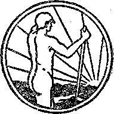

A JOURNAL OF FACT HOPE AND. COURAGE
igimgmmmomiimHmsHmimmimsmmmmimimni
in this issue
ALUMINUM AND SOIL
VIRGINIA AND TYRANTS
LB. S.A. AND FREE SPEECH
COURAGE OF THE FORUM
TRIAL OF JESUS CHRIST eminent jurist reviews the case
RETURNING FROM HELL possible under new covenant; lecture broadcast by Judge Rutherford
immmmtimmmmmmiimsmEESHmiiimmmmimm
EVERY OTHER WEDNESDAY 5c a copy - $1.00 a year - Canada &. Foreign $ 1.50
Volume X <• No. 246 February 20, 192 9
Contents
......,-■......;,.—■?......- -:---------_^_Kv
Social and Educational
Nothing Much . ......... .......... 327
Twenty Types of Men ................ 330
The Courage of THE FOHVaI .............. 341
Finance—Commerce—Transportation
The First Ship Without Rivets ............. 327
Spain May Tunnel Under Gibe;'her ........... 328
Immense Power Tunnel in Korea ............ 32!)
Giants Cause the Wars ................ 32!)
India’s Great Canal Opened .............. 340
Political—Domestic and P'oueion
180,000 Cry Peace, Peace ............... 327
World Radio Telephony ................ 328
Mosul Oil to Be Piped to Haifa
Welcoming m Peach Ambassador ............ 330
I.B.S.A. and Free Speech .....
Agriculture and Husbandry -Goat Culture in British Columbia . .
Chemistry, the Newest of the Old Arts .......... 331
. Home and Health
Aluminum in Soil, Vegetation, Animals and Humans ..... 323
Interior Aluminum Plating Not So Good
Virginia and Sic Semper Tyrannis
Eelicion and Philosophy
Waking Up Slowly But Si.bei.y .....
The Trial oh Jesus Chidst ............... 343
Religion and Prohibition in Illinois .....
Bible Questions and Answers .............. 350
Prayers fob Repose of Souls .............. 350
The Children’s Own Radio Stogy ............ 351
Published every other Wednesday at 117 Adams Street. Brooklyn, N. Y., U. S. A., by WOODWORTH, KNORR & MARTIN
Copartners and Proprietors Address: 117 Adcuas Street, Brooklyn, N. P., V. S. A. CLAYTON J. WOODWORTH.. Editor ROBERT J. MARTIN .. Business Manager NATHAN H. KNORR.. Secretary and Treasurer
Jiva Cents a Copy—$1.00 A Year Make Remittances to THE GOLDEN A.GB Notice to Subscribers: We do not, as a rule, send an acknowledgment of a’renewal or a new subscription. A renewal blank (carrying notice of expiration) is sent with the journal one month before the subscription expires. Change of address, when rc<iuestedf may be expected to appear on address label within on® month.
Pobeign Offices
British . . , s , s , 34 Craven Terrace, London, W, 2, England Canadian 40 Irwin Avenue, Toronto 5, Ontario, Canada
Australasian ..... 4S5 Collins Street, Melbourne, Australia South African ..... 6 Lelie Street, Cape Town, South Africa
Entered as second-class matter at Brooklyn, N, X.t under the Act of March 3, 1879.
Volume X Brooklyn, N. Y., Wednesday, February 20, 1929 Number 246
Aluminum in Soil, Vegetation, Animals, Humans
By Dr. 0. T. Betts
"Cursed is the ground for thy sake."—Gen. 3:17.
FARMERS throughout the nation have for many years seen their lands become less and less productive. Many of them have become discouraged and have abandoned their farms. These people, who number many thousands, left beautiful and health-giving surroundings in the country districts, to seek employment in the cities, where a more profitable income could be secured.
With the greatly increased cost of food and farm products there has been a constant call for farmers and more farmers, yet the migration has continued to flow city-ward in spite of the price of living steadily climbing higher and higher.
In the past the young man on the farm has had a poor future staring him in the face. This has been on account of the dwindling returns from the soil on which he has labored, and the discouraging fact that many crops are so poor that they do not pay. There has been a steady depletion of farmer boys on our farms. Practically only those who are unable to leave or are too old to secure positions in factories remain and man the farms.
This condition may now be revolutionized. Scientists some fifty years ago began intensive research upon the cause of poor (sick) soil. Very little progress was made by various agronomists in their work, yet they plodded on in the hope that some day it might be revealed how this could all be changed and crops again be produced in such abundance and of good healthy stock, on poor soil, that it would pay the boy, financially and in the keeping of good health, to remain on the farm and thus make life worth living. This is now possible.
Facts have recently been extensively published in numerous papers that examiners have
' . 823
learned what causes poor soil, that this condition is produced by aluminum—too much aluminum—in the soil, that this metal makes it sour, acidic and unproductive. Following is a copy of an editorial published in The Plain Dealer (Cleveland, Ohio), November 28, 1928.
Why Soil is Sour
The fact that soil becomes sour and unproductive has generally been accepted as an inexplicable fact. Theories have not been lacking to account for the distressing phenomenon, but they have been abstruse and have never been proved. To kill the acidity, limo has been used. Lime, being an alkali, can destroy any acidity, no matter what the cause.
Now, after fifty years of intensive research, the University of Wisconsin announces that it has discovered the cause of sour soil. This is the formation of aluminum silicate. It is purely a chemical process, and has nothing whatever to do with the theories of absorption and of unknown electrical phenomena which have hitherto been propounded.
With the cause definitely ascertained the chemical remedy will be comparatively simple and inexpensive, and vast areas of unproductive land may be restored to fertility.
It is a discovery of incalculable importance. Credit goes to Prof. Emil Truog, who conducted the ultimate researches based on the work of many preceding agronomists, some of whom are dead. Modestly and undoubtedly justly Prof. Truog shares the praise with these predecessors and with his present associates. It is not too much to predict that the Wisconsin discovery will revolutionize the science of agriculture.
The Dictator of Italy has organized an “antiurban campaign” known in America as a “back to the land” movement. This has been done to compel the youth of Italy to remain on the farm. Now that the cause of “poor, sour soil” is known and the. remedy for this condition available, the
young men of Italy may be happy t remain on their farms, if they also receive the information which is now being given to the American public.
Governmental scientists of our Agricultural Department have been very busy and have made extensive investigation of plant life. They have placed experimental stations throughout the nation, where these matters may be under constant observation. This has been done for the express purpose of being of assistance to the farmer in producing more abundant and greater-valued crops.
The question of corn sickness has recently been of particular interest to members of our Agricultural Department, such as George Hopper and John F. Trost. These men have been investigating the various causes of the diseases common to corn.
Many of our fields throughout the nation have become unproductive. Corn has what is commonly termed soot or mold. The stalks become very weak and unable to stand the ordinary winds and have a tendency to break over and fall to the earth.
This reached such a stage in recent years that it was almost impossible to secure corn for canning purposes without having’ an unsatisfactory product. The corn canners of America made considerable complaint and they made demand that further investigation should be conducted to learn why this condition exists.
The two men above named have spent years of their time in extensive investigation, to determine the cause of this condition. The January, 1928, issue of The Country Gentleman magazine contains a report of their findings upon this question, under the title “Men Who Make New Land from Old”.
They give to the farmer the information that they have discovered and proven, by actual tests, how sick corn can be made well and crop 'disease prevented. There are photographs of plants, showing how the diseased corn looks, also how fields of corn look which have been poisoned by aluminum.
They have found that this condition is produced by the earth’s being starved for phosphate and having too much aluminum. It was discovered that the ash, after burning the stalks in the poor fields, contained as high as five percent of pure aluminum, twice as much as that contained in the healthy corn in other fields close by.
The following quotation is taken from the above-mentioned magazine, and it is a marvelous revelation regarding the damaging or evil effects of too much aluminum in the plants.
It was in down corn—big corn but corn with rotted roots and chaffy ears—that he had come upon the iron; and now in the stunted, leaf-fired corn of acid fields he found aluminum—too much aluminum— and of course everybody knows that this metal, aluminum, is the chemical cousin of iron. From the fields near LaFayette, Hopper brought stunted corn plants with curiously discolored leaves to the chemist Carr.
From the Battle Ground in Tippecanoe, Hopper brought such plants, and the ash of those plants held five percent of aluminum—twice as much as the ash of healthy ones close by. Hopper rose now to the height of the first line experimenters: he clinched his hun’eh-es, guesses, observations by an ingenious trick. He planted a field of corn on rich soil where it would show never a sign of sickness.
The com shot up straight and strong. ■
Then into the bottom of those good living cornstalks, just above the first joints, Hopper bored little holes with a sharp cork borer, right into the soft pith of those joints he bored. Then into the hole he poked—it was a nice tight fit—the open end of a little glass tube, swelled out to a bulb at the opposite end.
Each one of those tubes he tied carefully to the stalk of its corn plant. . . . He poured solutions of the salts of iron, aluminum, a dozen other chemicals into those bulbs—for the living plants to drink gradually out of those bulbs.
It was magic. Less than one three-thousandth of an ounce of aluminum gradually killed strong plants, fired the leaves just exactly as they would discolor in a bad acid soil, killed the leaves between the veins. And the iron? Small bits of it turned the cornstalk joints brown, wrecked those joints exactly as they were wrecked by the root rot.
But what was he going to do about it? The brutal fact was that this was only a start of the fight against corn sicknesses.
There must be some way; somehow he must get the corn plant to stop sucking up that poisonous iron, and aluminum, out of the ground. If only he could do that, then those Gibberellas, those Fusariums, could go hang 1
What to do? Work to do, fumbling, trying; trying this, experimenting with that.
From now on Hopper had the priceless help of the lean John Trost.
Together they found out about the original experiments of Bert Hartwell, of Rhode Island, and of his coworker, Pember, who had proved that when certain plants went to pot in acid soil, it wasn’t the acid, but aluminum that made them sick.
And those Rhode Islanders had held out hopes, had.added lime and phosphates to soil, and the lime and phosphate had knocked out the poisonous effect of the aluminum.
“We’ll keep aluminum from poisoning our corn, too,” vowed Hopper and John Trost, and that winter Trost toiled in the dank greenhouses at LaFayette.
Then they went out and dug up poor soils, bad corn soils, soils famous for root rot, from Pike and Daviess counties to the south, and from Bartholomew, Hancock, Shelby counties southeast of Tippecanoe. Into pots they put those weak soils, tucked in good healthy seed of maize—then treated the pots, some with lime, others with phosphate; and into some pots they put the deadly chloride of aluminum.
Trost nursed and tended the seedlings that struggled up in the kind heat of the steamy greenhouse. At the end of ten weeks he harvested the young maize.
That test turned out just as it ought to.
Oh, there was no doubt that phosphate was fine—in the phosphate soil the young plants stood green and sturdy. In the check-pots—with no phosphate or lime— the rots were already beginning at the roots. But in the aluminum soil? The seedlings hardly poked their shoots out of the ground before they blighted, died.
Aluminum and phosphate are present in all kinds of soil butthey must be properly balanced in order to produce good healthy herbs or food for animals. It has been found by Prof. E. L. Mosely, Sandusky, Ohio, that when this drug (aluminum phosphate), contained in herbs such as white snakeroot or the rayless goldenrod, is consumed by animals, they become sick and show a palsied condition commonly known to the medical profession as “trembles”.
Cows eating this drug contained in the abovementioned plants contract a disease known as “milk sickness”. Cats, rabbits and human beings consuming milk from cows having this sickness also contract “trembles”. Aluminum was found in the milk of cows which ate the above-named herbs.
Professors Edwin 0. Jordan and N. M. Harris, of the University of Chicago, wrote an article which appeared in the Journal of the American Medical Association, May 23,1908, entitled “The Cause of Milk Sickness and Trembles”. Prof. Moseley compares the statements of the abovenamed professors with those of Arthur E. Cushny, Ph.D. The writer gives Cushny’s statements as found in his book Pharmacology, third edition, page Z01, partially quoted by Prof. Moseley :
Aluminum has a very remarkable general action when it obtains access to the blood. In Siem’s experiments on animals, the sodium-aluminum lactate or tartrate induced a very slow intoxication, mammals never dying from the effects sooner than one or tw® weeks after the intravenous injection of the salts. In frogs the symptoms were those of a descending paralysis of the central nervous system, the heart and the peripheral nerves and muscles being little affected.
In mammals, the first symptoms appeared only after three to five days, and consisted in constipation, rapid loss of weight, weakness, torpor, vomiting; marked abnormalities in movement and sensation were observed later, such as tremor, jerking movements, clonic convulsions, paresis of the hind legs, anesthesia of the mouth and throat and lessened sensation all over the body.
Before death, diarrhea often set in and albuminuria was generally present. The mucous membrane of the stomach and bowel was found swollen and congested, the kidney and liver had often undergone fatty degeneration, and hemorrhages were found in the renal cortex. Albuminum was found in the urine.
Like the other members of the heavy metal series, aluminum therefore acts on the bowel and kidney in general poisoning, while many of the symptoms point to a direct action on the brain Dollken has recently confirmed Siem’s results, and showed that the nerve cells and fibres of the cord and medulla undergo degeneration, particularly those of the lower cranial nerves.
Following is Prof. Moseley’s discussion of the above findings of Cushny, found in Prof. Moseley’s brochure, The. Cause of Trembles and Milk Sickness, republished in The Medical Record, May 15,1909. .
Now, these effects of the injection of aluminum, remarkable as they are, are the same as the effects of milk sickness and trembles. The “constipation, weakness, torpor and vomiting” are familiar to all who have seen persons or carnivorous animals affected with the disease. The “tremor, clonic convulsions, and paresis of the hind legs” are striking features of the “trembles” in animals.
As to “loss of weight”, Mr. Louis Quinn, who has lost more than a thousand dollars’ worth of stock from trembles, says: “The hide of a cow that has been sick for two weeks with trembles will not weigh within forty percent of a normal cowhide.” Concerning anesthesia, he says: ‘ ‘ Salt placed on the nostrils of a cow calls forth no response.” “Cattle in which trembles proves fatal live on an average hardly, a week after they are first seen to be affected, but the time differs considerably; a few live about two weeks.” Sheep live less than four days after the disease is first noticed. Siem’s experiments •"ere with eats, dogs, and rabbits.
For our knowledge of the pathological anatomy and histology in “trembles” we are indebted to the article by Jordan and Harris, referred to above. Not only did they find all the lesions which Cushny mentions on Siem’s authority, but many others which are mentioned in Siem’s pamphlet on the action of aluminum.
In 1913 the writer found that his various ailments quickly disappeared directly after discarding aluminum kitchen utensils in his home. Investigation at that time proved that aluminum dissolved from his aluminum cooking utensils, and this was the apparent cause of his broken health. Within the twelve-year period before this matter of aluminum poisoning became generally known by the public, hundreds of his patients also received health benefits by discontinuing eating the poison which was ingested with their foods from aluminum cooking utensils which they used in their homes.
The following quotation is taken from “The Story of the Human Aura”, by Dr. George Starr White, M.D., Ph.D., LL.D., F.R.S.A. (London), of Los Angeles, Calif. Many reports of clinical cases of aluminum poisoning are noted in the Doctor’s books, but the following citation will suffice for this article: .
The man who came from Minnesota with the one referred to in No. 7, was to have been operated on for ulcer of the stomach, but he did not like the idea; so he came out here to have me diagnose his case. It just happened that I diagnosed him the same day as the man who came with him. I diagnosed this man as ulcer of the stomach and aluminum poisoning. Hence, I concluded that the ulcer was caused by the aluminum poison.
I treated him practically as I did the other man, and this man was entirely free from stomach pains in about 8 months. It was a very bad case and perforation would surely have taken place soon, had he not gotten relief.
You see the surgeons are not taught to look for near-by causes for such troubles, but think only of the knife.
Many can use aluminum for years without any outward signs of being poisoned by the aluminum compounds, caused by the food cooked in it, but others linger on with all manner of unhealth until they die of “heart trouble”. As aluminum is such a terrible heart depressant, it kills, no doubt, thousands that way.
It is apparent from the above various quotations and statements that aluminum, in either the organic or the inorganic form, produces poisoning to the soil, poisoning to the vegetation, poisoning to the animals eating such vegetation, and poisoning to human beings consuming the drug.
The writer believes that, since men like Dr. 'James B. Murphy, of the Rockefeller Institute (a cancer research organization), New York, and Dr. James Ewing, of Cornell University, New York, claim that cancer is induced by metal irritants or what is known to the medical profession as “chemical ferments”, it behooves us to investigate the matter of aluminum poisoning upon a greater scale than ever before, so that the facts pertaining to the evil or deleterious effects of this drug upon humanity may be available to all.
SEVERAL months back, in an issue of The Golden Age, you had an article on “Aluminum Poison by Way of the Kitchen”. The article interested us so much that we decided then and there to discard all of ours, and did so, with amazing results.
Right here allow me to congratulate The 'Golden Age that through divine providence they saw fit to print that article, whereby I have, been restored to normal health. This was after three doctors had tried, but with no result other than to leave me in an almost helpless condition.
In reading the article I was much impressed with the fact that I had often found the bowel region to seem sore, so much so that, personally, I thought it was ulcerated. The doctors said I was suffering from intestinal indigestion; but I was so sore internally day and night that I hardly knew what to do.
In less than two weeks after we had discarded our aluminum all soreness disappeared and I have regained normal health.
The First Ship Without Rivets
HE first ship to be built without rivets has been launched recently in South Brooklyn. The plates of the ship were all joined by welding. It is stated that the job seems to be a perfect one, no signs of strain being evident.
If Billy Sunday Were God
illy Sunday says that if he were God fifteen minutes certain of his political opponents
would not be this side of hell. This gives us all two tilings to be thankful for. The first is that Billy Sunday is not God, and the second is that we are not Billy Sunday,
Thomas Hardy’s Poem
Hardy, at Christmas time, 1924, produced the following poem:
"Peace upon earth!” was said. We sing it, And pay a million priests to bring it.
After twTo thousand years of mass
We’ve got as far as poison gas.
Chinese Eggs in Britain
T N THE face of the knowledge that there are -'L twenty millions of human beings starving in China it makes one feel odd to read that a single ship recently brought forty million Chinese eggs into the British market, and that no ready sale awaited the arrival of the cargo.
600 Periodicals in Palestine
T THE press exhibit recently held in the new Jewish city of Tel Aviv, there were
Pacifism in Mexico
resident Gil of Mexico has declared that his government will combat not only war but the thoughts of war; and to that end he will give special attention to make sure that the history taught in the schools of Mexico is taught from a pacifist viewpoint,
Wolves West of Los Angeles
WESTERNERS as well as Easterners were doubtless surprised to find that three deputy sheriffs west of Los Angeles were recently attacked by a pack of wolves. It seems almost incredible, but the wolves were slain and bounty paid.
Getting Ready for Flying
HE business men of America are now getting ready for flying and are going about
it in dead earnest. All cities will be so marked that licensed aviators will be able to identify them immediately from the air and to know how far it is, and which way, to the nearest air port. Scientific landing stations approximately 1,500 by 2,500 feet may be built in the centers of America’s greatest cities, and hundreds of feet above the ground.
Britain Building an Invisible Plane
HE British government is building an airplane of a material transparent in appear
shown six hundred periodicals, many of them in ancient Hebrew; surely an imposing figure in a Jewish population of only 165,000 people. Their Arab neighbors refer to the Jews as "The People of the Book”. In fact, this name was conferred upon them by Mohammed himself.
180,000 Cry Peace, Peace
0 A petition asking that the Kellogg Peace Pact be promptly ratified by the Senate,
180,182 persons have appended their names. The petition which was handed to President Coolidge was presented by Bishop McCowell and Doctors Gulick and Darby in behalf of the Federal Council of Churches of Christ. No doubt the great cry of "Peace and safety” is now about to go up over the land, with Armageddon to follow in its wake, if we interpret Scripture correctly.
ance, but unbreakable, and not affected by rot or rust. The material is called plass. It is believed that this plane will be practically invisible in flight and could not be brought down by anti-aircraft guns. Bullets may be imbedded in plass without hurting it, and repairs in the material may be so made as to remove all traces of the injury inflicted upon it by bullets or splinters.
Burning Books in County Galway, Ireland
HE archbishop of Tuam, officially appointed censor to the Libraries Committee, has
now completed the burning of books in the Galway Library (Ireland), of which he, the archbishop, does not approve. The people of county Galway will now be privileged to think as the archbishop thinks. If they think any differently, they will confess it. The books burned included those of Victor Hugo. .What is the archbishop afraid of, anyway?
SEED his opinion of Bolshevism, George Bernard Shaw said: “The Bolsheviki teach common honesty to the children of Russia, while all the capitalist states are teaching them that their highest destiny is to become rich idlers. If Russia sticks to that she will lick creation.”
IN AN address at the Hotel Astor, United States Attorney Tuttle made the statement that there are 350,000 criminals in the United States, and that there is more crime and fraud in America than in any other country. It is actually safer in the interior of China or Africa than in America.
The Wastage of Food
JT SEEMS too bad that in one California harbor, and that not a large one, sometimes 200 tons of fish are thrown away in a single day. Those who are interested in profits are determined that prices shall not come down, and so they keep the surplus fish away from the markets.
World Radio Telephony
THE British government is now planning" a J- radio telephony network that will place the entire earth in one vast telephone system. If the plan works out as planned, anybody any-vdiere in the British Empire can call anybody else anywhere in the same empire and converse with him by telephone. -
Surprises as to Figs
WE HAVE just had two surprises in regard to figs. One is that figs may be bought in the fig orchards for as low as twenty-five cents a bushel, and sometimes for even less; and the other is that when you buy three of the same figs at a high-priced restaurant in New York they cost you eighty cents.
Nicaragua Goes Liberal
THE United States backed a conservative for president of Nicaragua, entailing a private, unauthorized war which has cost several hundred lives. Now the Nicaraguans have had their election and elected a Liberal president after all, showing that the war was as unpopular there as it. was here. •
rpiIE Junkers flying hotel, accommodating fifty persons, is now nearing completion. The structure is a two-story affair, the lower floor being devoted entirely to freight and mail. The passengers are carried in the wings, which are fitted with windows for observation purposes.
STRANGELY enough, the Mennonites who went to Paraguay by thousands two years ago, in the effort to be rid of fears of war for all time, are directly in the zone of conflict between Bolivia and the country where they are now making their home. The world is still a bad place for anybody who loves peace.
Westernizing Turkey and China
THE westernizing of Turkey and China is in full swing. Turkey is sitting up nights wrestling with the Roman alphabet, the only legal alphabet in the country since November 30; while China is trying to figure out how to do business with a solar calendar when all her life long she has been using a lunar calendar.
Spain May Tunnel Under Gibraltar
QPAIN is making wonderful progress of late. M Just now a commission of technical experts is studying the problem of constructing a tunnel to Africa, beneath the straits of Gibraltar. ■ The tunnel must be at least eight and one-half miles long and must descend nearly thirteen hundred feet below sea level. If built it will cost $40,000, 000 and will be connected with through routes to Central and South Africa now building or in contemplation.
The Teletypesetter
THE Teletypesetter, tried out at Rochester, December 6, 1928, proved that an operator in New York, running an electric typewriter, may control thousands of typesetting machines located in Chicago, New Orleans, San Francisco or any other place on the continent. It is even hoped to make this device operable by radio. It seems to presage loss of employment for thousands of typesetters, but it is a step ahead in the progress of the world. Ticker tapes receive the messages and transmit them to the typesetting machines.
IT SEEMS that the old Vatican was dishonestly built and is now falling to pieces. The ceilings of two cellar rooms have fallen down, carrying with them the floors of two large rooms on the ground floor. The military guard which usually occupies these rooms was out at the time of the collapse.
nPHE latest in Italy is that people may not move from the country into the city without consent of the Fascisti authority, and the same authority may compel those now living in cities to move back to the country. City employers are required to refuse work to peasants, so as to keep them in the country.
Qi^N eager the nations must be to disarm!
One hundred and eleven resolutions on armament have been adopted and these have been debated in 120 sessions; yet year after year there is no disarmament, but on the other hand armaments are steadily increasing. Nothing ever frightened these nations that are so eager to disarm, as much as Russia’s offer to disband its army, demolish its forts and destroy all its other means of making war.
Labor Arbitration in Germany
ERM ANN’S labor arbitrator recently awarded a ten percent increase to the 225,000
workers in its iron and steel industries. As soon as the notice was served upon the financiers controlling the enterprises they at once closed their doors, throwing every one of the 225,000 men out of work. The government, promptly voted a $5,000,000 relief fund for the workers, and after holding out for five v/eeks against the combined opinions and powers of the government, the workers and the public, the financiers capitulated.
Captain Coll a Brave Man and True American abiaix E. P. Coll, Hoquiam, Washington, member of the American Legion, is a brave
man. In a public letter to his fellow Legionnaires he says in part: “The I. AV. V/. in Centralia, Washington, who fired upon the men that were attempting to raid the I. W. AV. headquarters were fully justified in their act. As in the famous Dreyfus case in France, so in the state of Washington, a great wrong has been done, and the innocent party has suffered.” Everybody knows that Captain Coll is telling the truth, and that these innocent men are kept in Walla Walla prison for the same reasons that Sacco and Vanzetti were murdered in Boston. Captain Coll is a true American, not a uniformed sissy.
THE Mitsubishi Company of Tokio has just completed a seventeen-mile power tunnel through the mountains of Korea. Through a succession of dams and power plants a river with a daily average flow of 660 cubic feet of wrnter per second is given a fall of 3,326 feet. The power will be used for the manufacture of nitrogen for fertilizer purposes.
Giants Cause the Wars
HE people are beginning to find, out things.
In its issue of December 14, 1928, The
Graphic says: “It is Big Business that controls the destinies of the people of today. It is behind activities of the statesmen, and if this omnipotent power wants war, we will have it.” The mask is being pulled farther and farther from the Devil's organization every day,
Shows in the Stores
EW YORK’S largest department stores are running free shows, with the object of at
tracting customers, and the plan is declared to be a financial success. One good feature of it is that it provides employment for actors and others. Free shows as a means for selling goods are as old as the hills; but their employment in modern department stores is something new.
Cadman the Impossible
adman the Impossible gives three answers to questions. They are published in the
same paper. The first is advice to a woman to beat up her hubby with a rolling pin vigorously exercised; the second advice is to pay no attention to ranting zealots who invoke fire, brimstone, etc., on other people; and the third one refers to a portion of God’s AA7ord in this language: “Under no circumstances, at least of all such sad ones as yours, should the book of Ecclesiastes be consulted for light upon the hereafter.”
AST. LOUIS pastor preaching on the flag on Armistice Day made the surprising statement that “Old Glory is the glory of God shining in the face of the people”. We find no such glorification of human battle-flags anywhere in the Bible, but one woman was so carried away with the pastor’s eloquence.that she fainted away and had to be carried out.
Pacifism in Rumania
ONE of the things that led to the downfall of the old regime in Rumania and the setting up of a peasant’s government was the act of imprisoning 250 workmen who refused to collect funds for an air fleet to uphold the old order of things. Three of these men were so bra-tally treated -while in prison that they committed suicide.
Tremendous Storms in Europe
EUROPE has been having storms of unprecedented severity. Vessels held in port, vessels unable to make port, demolished houses by the hundred, trees blown across railway tracks, and forty persons killed, are among the items. In one instance a channel vessel that usually makes its trips in one and one-half hours required ten and a half hours to make the crossing.
No Connection with Bolshevism
THERE is no connection whatever between The Golden Age and Bolshevism, wdiich latter form of government we consider one of the most tyrannical in the urn rid today; yet by an odd coincidence, only three days after the leading article in our paper denounced the whole Christmas idea as unscriptural, the Bolshevists announced that no more Christmas celebrations wrnuld be allowed in Russia.
Largest Shoes Ever Made
npIIE largest shoes ever made to be worn by a human being have just been completed for
Robert Wadlow, of Alton, Illinois. Robert is eleven years old, six feet nine inches tall, weighs 217 pounds and is growing like a weed. His new pair of shoes is size 25 Double A. They are eighteen inches long and five inches wide. Robert’s pituitary gland is working overtime, and if he lives he is morally sure to be above nine feet in height.
TJ AIFA, one of the new cities of Palestine, is about to become one of the oil centers of the world. It is settled that the oil from the Mosul regions will be piped to Haifa for export, and ground for the storage tanks has already been purchased by the great oil companies involved. This will help in the development of the old and yet new land of Abraham. A thoroughly first-class modern hotel will be built shortly in Jerusalem.
Twenty Types of Men
TpOREMEN now recognize, and are taught to recognize, twenty types of men, and to divide them into three distinct classes.
In the Number One, or desirable class, are put the types that are classified as pleasant, conscientious, honest, cooperative and ambitious. .
In the Number Two, or usable class, are put the types that are classified as grouchy, dissatisfied, narrow-minded, contentious, sickly, crippled, temperamental and jocular.
In the Number Three class are put the types that are classified as shirkers, careless, agitators, indifferent, lazy and sobbers.
It will be noted that the foregoing classification makes no reference to the habits of speech or conduct such as profanity, smoking, chewing drinking, immorality, etc., but that it does want honesty.
No Winter Storms in Florida
Charles L. Mitchell, w’eather forecaster at the Washington office, has written and compiled a detailed history of hurricanes on the Atlantic and Gulf coasts, covering a period of fifty years. The record shows that in Florida these storms have occurred only in the months of June, July, August, September, and October.
While it is to be deplored that some sections of Florida have suffered severely from storms in recent years, there may be some consolation in the statement by Dr. Harvey Kellogg, of the Battle Creek Sanitarium, that “for every life lost in Florida by storm, at least a thousand years are added by Florida sunshine to the lives of the multitudes flocking to the state from all over the world”.
Chemistry, the Newest of the Old Arts
in glandular function. These chemicals, all of which can be found in the dust beneath our feet, are estimated as worth collectively about $1.04.
Every time a man inhales, the chemists tell us, he draws into his lungs some 3,000,000,
THE word “chemistry” is supposed to be derived from Khem, an ancient name of Egypt, the early home of alchemy. The alchemists of the eighteenth century were objects of ridicule. Light came slowly. Carbon dioxide was discovered in 1756, hydrogen in 1765, and oxygen in 1774. AU progress in chemistry is since then. As a science, it has just begun to show itself.
An element is a substance which can not be decomposed into different kinds of matter by any means at present employed. In scientific usage, an atom is the smallest particle of matter that can enter into combination: one of the elementary constituents of a molecule. A molecule is a group of atoms so united and combined, by chemical affinity that they form a complete, integrated whole, being the smallest portion of any particular compound that can exist in a free state; as, a molecule of water consists of two atoms of hydrogen and one atom of oxygen.
Drink a glass of water and it is calculated that you have swallowed about 1,865.000,000,000, 000,000,000,000 molecules. Please do not try to check up on this by counting them as they go down! A molecule is to a drop of rain as a pea is to the size of the earth. Two million kinds of molecules are theoretically possible, and about one-fourth that number of combinations have been worked out. The one fundamental fact of chemistry is that matter can undergo apparent transformation of kind, one substance being converted into another. Thus iron is changed to rust.
Man a Chemical Engine
A one-hundred-pound boy or girl consists of sixty-five pounds of oxygen, eighteen pounds of carbon, ten of hydrogen, three of nitrogen, two of calcium, one of phosphorus, five and a half ounces of potassium, four of sulphur and two and a quarter each of chlorine and sodium, nearly an ounce of magnesium, a very small quantity of iron and a minute quantity of fluorine, silicon and iodine.
The oxygen and hydrogen are in the body fluids; the carbon, calcium and magnesium in the bones; the nitrogen, potassium and phosphorus in the bones, blood and muscles; the chlorine and sodium, chiefly in the blood; the iron in the red corpuscles of the blood; the sulphur, all over; the fluorine and silicon chiefly in the enamel of the teeth, and the iodine aiding ' • 331
000,000,000,000,000 little particles of air, a jostling, pushing crowd of oxygen and nitrogen particles so crowded that each one bumps his neighbors and is bumped back 5,000,000,000 times every second, each trying to rush 1,500 feet in that time.
When the same man exhales, 120,000,000,000, 000,000,000 of the oxygen particles that went in do not come out, while their places are taken by carbon dioxide and water. Every breathing animal loses weight with every breath. That is one of the reasons we have to eat and drink in order to live.
Some of ike Other Elements
Aside from the elements of which our bodies are composed, most of us have some acquaintance with aluminum, antimony, arsenic, bromine, copper, gold, helium, lead, manganese, mercury, nickel, platinum, radium, silver, tin, vanadium and zinc.
There are ninety-two known elements altogether. Of some of these the layman never hears, and the rarest of them have been seen by only a few persons. There are actinium, argon, barium, bismuth, boron, cadmium, caesium, cerium, chromium, cobalt, columbium, dysprosium, erbium, europium, gadolinium, gallium, germanium, glucinum, holmium, indium, ionium, iridium, krypton, lanthanum, lithium, lutecium, molybdenum, neodymium, neon, niton, osmium., palladium, polonium, praseodymium, rhenium, rhodium, rubidium, ruthenium, samarium, scandium, selenium, strontium, tantalum, tellurium, terbium, thallium, thorium, thulium, titanium, uranium, xenon, ytterbium, yttrium and zirconium.
Some years ago tungsten was supposed to be an element, but its atoms were broken down and changed into helium by artificial lightning developed by the late Dr. Charles P. Steinmetz, electrical expert of the General Electric Company. Many other supposed elements have also been broken up in recent years.
It is believed that ultimately a way may be found to break up all the elements, and to release atomic energy. Should this tim® ever come,
the problems of heal, light, power and food will be solved for all time.
Oxygen and nitrogen are not the only elements of the air. In addition there are also the rare gases, argon, helium, neon, krypton, and xenon. Much searching was done to find helium, the existence of which, in the sun, was established in 1868. It was finally found in 1895. Every device known to science has been tried to make helium combine with other known chemical elements, but all to no purpose. This is a property which it shares with some of the other rare gases just mentioned, discovered about the same time.
Some of the elements come into their own very slowly. Thus vanadium has been known since 1801, but it was only recently that it was found that four pounds of vanadium added to a ton of steel results in an increase of forty-five percent in its strength. Ninety-five percent of all the known vanadium ore is found in the Peruvian Andes.
Radium, Rhenium and Illinium
Radium was discovered in 1898, and the world has not yet recovered from the shock; nor has it found out how to handle this element without danger. It is in common use for luminous paint and other purposes, but at the cost of the life of the users.
Radium is supposed to have a life of 1,590 years, at the end of which time it will have reduced itself to lead, uranium, thorium, and helium. Weight for weight it gives off 330,000 times as much heat as could be obtained by burning coal. It is always a little hotter than its surroundings, regardless of what those surroundings may be. Nothing that can be done to it alters its habits.
Somebody has jokingly said that radium would be ideal for a house furnace if it were not for a few things. Two hundred pounds of radium would heat the house all winter with a loss of only one and a half ounces of radium, but when summer time came there would be no way of shutting off the heat. Moreover, it would be impossible to go near the furnace at any time, on account of the emanations from it. A third objection noticed is that two hundred pounds of radium would cost something like $9,000,000,000, and that is too much.
Rhenium has been obtained in pure form to the extent of seven hundred-thousandths of an ounce. It is described as a black powder of high melting point that unites readily with a number of other elements. Its uses are not known. In an atmosphere of pure oxygen it ignites, forming a white oxide.
Illinium, chemical element Number 61, the first to be 'horn” on American soil, has been discovered in Illinois. Twenty years were spent in separating one-half ounce of this material from four hundred pounds of monazite, the rare earth used in the manufacture of gas mantles.
Mining the Air
“Mining the air” is a term first used by Sir William Crookes, when it became apparent that man is to recover billions from that source. Every square mile of air over the earth’s surface carries 20,000,000 tons of nitrogen, or enough to last the entire world twelve years.
Nitrogen is indispensable to man. Originally mined from the air for military reasons, the mining continues after the World War, and at a greater rate than during the war itself.
At Oppau, Germany, an immense nitrate plant, constructed at a cost of $50,000,000, and employing 6,000 men a day in the making of nitrogen in the form of ammonia, blew up, completely demolishing the town in which it was located. This disaster occurred in September, 1921.
The Coal Tar Bases
One of the fields in which the chemist delights to roam is that of coal tar, which shows how different he is from the rest of us. Most of us, when we get into tar, like to get out of it and stay out of it; but the chemist finds it a never-failing source of interest.
Coal tar first began to yield its treasures in 1856, when William Henry Perkin, an eighteen-year-old chemistry student, while experimenting in a laboratory in London, seeking a way to produce quinine artificially, obtained a dark precipitate which, washed in alcohol, proved to be the dye now known as mauve. A German named Hoffman sensed its possibilites, obtained the secret, and set out post haste for Berlin, since then, and because of that, the chemical center of the world.
Some of the things that come from coal and coal tar, and in nearly all of which the chemists have had a hand, are the solvent carbon disul-phid, illuminating gas, fuel gas, ammonia for the making of artificial ice, ammonium sulphate for fertilizers, electrodes for electric furnaces, coke for steel works and smelting plants, lamp-black for paints, crude carbolic for sheep dips and medicinal use, photo developers for movies, explosives, dyestuffs, flotation oils for solvents, cresols for wood preservations and disinfectants, tar for paints and pipe covering, roofing and paving material, naphthalin, mothballs, synthetic tanning materials, indigo, lubricants, waterproofing, shingles, insulation, powdered fuel, pitch, briquets, targets, perfumes, drugs and countless other items.
The Chemistry of Life
This is too great a subject for us to say much about; yet we are all interested in it, because every one of us is a chemical factory where complicated changes are continously taking place, and of which we know as yet but little.
During the World War the chemists occupied the front rank in designing ways to kill their fellow men; but they are no less potent in times of peace. Every farmer is a chemist on a huge scale, converting the elements of the soil into food for man and beast.
All life is dependent on what is called Keule’s ring, named in honor of the man who discovered it. The ring consists of six carbon atoms, linked to form the main loop, each of them holding also a single hydrogen atom. Without this there is no life. Carbon is exhaled by every animal and inhaled by every plant, aiding it in building starch and sugar.
The chemists are hopeful that as they have evolved drugs that have exerted evil influences on humanity, such as alcohol, opium and cocaine, they may yet prepare compounds that will stimulate virtues instead of vices. We have our doubts about this.
Chemists have had much to do with tampering with human foods, to their injury, and also with the detection of those who have thus tampered. They have much work as insurers of the quality of foods. They are often called to assist physicians in diagnoses and autopsies.
Understanding the chemistry of bacteria it is possible to cause bacteria to enter into combinations with chemical compounds, thereby causing their death. This is believed to be of advantage to man also. It may be. We have our doubts, but incline to the belief that there is some truth in it.
Dr. Edwin E. Slosson, a famous chemist, said: “Chemistry is the science of power. All the energy of man and beast and all the energy of machinery, except that furnished by windmills and water wheels, is chemical energy, and nearly all of that is derived from two simple and similar chemical reactions, the oxidation of hydrogen to form water and of carbon to form carbon dioxide.”
Chemists were the first to notice that the combustible gas in the average auto exhaust amounts to thirty percent of the total heat in a gallon of gasoline, and it was their insistence that improved the carbureters of gas engines Until they reached their present point of efficiency.
Chemists are doing away with rust in machinery, a loss which, when fully corrected, will save 29,000.000 tons of steel every year. Paints and protective coverings are being replaced by changes in the metals themselves. Chemists have devised new methods of removing sulphur from coke, thus better adapting it for household fuel and for work in the steel furnaces.
At a large cotton textile plant, some years ago, engineers had introduced an air-conveying system so that prepared fiber might be quickly and cheaply transferred from one part of the immense plant to another. When cold weather came the plant did not work well, and an expense of $30,000 was contemplated for steam-heating the conveyor. The chemist recommended that the fibers be conveyed in cold air drawn in from outside the building. The engineers predicted that it would not work; but it did, perfectly.
Recent Chemical Achievements
In the year 1926 the Germans suddenly surprised New York and the world by dumping a shipload of wood alcohol in New York at a profit and yet at a price far below cost of production in the United States. Methanol is the name of the product, produced in Germany at twenty cents a gallon.
A system has been devised in Germany for arresting decay in poles, posts and other wood products by injecting special chemicals into them, under pressure. Aluminum alloys are now made as strong as steel. All-metal airplanes have for years been made of duraluminum, a strong, tough, artificial metal.
American chunists thought Japan was charging too much for her camphor, so now we are making it at home from turpentine. The chemical eye for seeing invisible light was worked out at Johns Hopkins University. Synthetic . leather is better than the real thing, from which it can hardly be distinguished. Synthesized perfumes are a matter of daily life.
Dry ice, which does not leave any liquid as it evaporates, is being used in refrigeration cars from coast to coast. Liquid ice, which can be poured on any hard surface and makes a good skating surface, and yet will not melt with less than 200 degrees Fahrenheit, are chemical achievements.
Better and cheaper soaps and glass, chemical bleaching instead of waiting for sun and dew, vast improvements in metallurgy, lactic acid from corncobs, secret inks, developments in the art of cookery, are all recent triumphs of the chemist’s art.
The Uses of Catalysts
A catalyst is defined as a body that changes the velocity of a reaction without itself being changed by the process. Coal burns quickly; iron oxidizes slowly. A catalyst might be found that would cause the iron to oxidize as rapidly as the coal.
When water-gas (made by passing steam over red-hot coal or coke) is treated catalytically it may be made to produce a dozen different alcohols and useful acids. Even grain alcohol may be made in this manner, without any grain being used.
The chemists themselves do not understand the nature of catalysis, and are quite unwilling to set any limits to its possibilities, in 'view of the wonderful results they are obtaining.
Catalysis is responsible for some of the new and wonderful materials of all kinds that are finding their1 way into market. It is believed that by this means many combinations can be effected which are not found in nature at all.
Chemistry as a Profession
Chemistry as a profession has its drawbacks. The fumes incident to it are not too beneficial. Dr. Emil Fromme, discoverer of many of the deadliest gases used in the .World War, died at sixty-three years. The gases affected his constitution and brought on a heart attack. Before • the World War most American chemists made a living running a drug store. Even now the wages are not commensurate with the risks and responsibilities.
The total annual chemical production of the United States is now around $3,000,000,000. The country is now very nearly self-sufficient in chemicals. It is the largest consumer of chemical and related products.
Chemists have constructed a scale of odors similar to the musical scale. The bass notes are represented by heavy odors, such as vanilla and patchouli, while the treble notes are represented by the sharp odors, such as peppermint and citronella. Chemists are close observers and students of nature’s methods of solving problems. They have to be such in order to be successful in their work.
One of the outstanding achievements of American chemists is that of Dr. George W. Carver, a negro professor at Tuskegee Institute, and son of an ex-slave. He has produced 165 products from the peanut and 100 useful products from the sweet potato, the latter including rubber, coffee, candy, dyes, paste, paint, starch, vinegar, ink, shoe-blacking and molasses.
The Chemist’s View of the Future
The chemist sees the clothing of the future made of the synthetic wool which he is already producing in his laboratory. He says it will be pasted together, because stitching is an unnecessary expense.
He sees the furniture of the home made of a beautiful combination of carbolic acid and formaldehyde. The home itself will be of rustless alloy steel, around which cement has been poured. The glass in the windows and on the sideboard will be of pollakite, transparent, in-. soluble in water and unbreakable.
Draperies, rugs, bed linen and table linen will be tissues of synthetic fibers. Dishwashing and the washing of clothing will have ceased. Man will eat three pellets a day instead of three meals. Streets will be paved with synthetic rubber.
Sleep will be abolished. Light will be heatless. Solar heat will be kept in storage. Fuel will be very cheap. Life will be greatly prolonged and mental and physical vigor will abound, Office furniture will all be made of light and strong aluminum alloys. Street and subway cars, locomotives and railway cars will be made largely of the same. Atomic force will be at man’s command. The Dead Sea will be yielding its 600,000, 000 tons of chemical treasures. And necessarily there will be vast additions to the chemist’s dictionary, which already contains 250,000 names of recent origin.
Chemical Man and His Chemical Male
We conclude this little sketch by two quotations from contemporaries. The first is from The North American. The second is from the Ladies Home Journal. As to the man:
What has chemistry to do with me? asks the average man in the street. From the moment the chemically-made. spring of the unwelcome alarm clock rouses him at sunup until he disposes himself between chemically-whitened sheets at night, he is surrounded by and dependent on its products and processes. The shoes he puts on are tanned by a chemical process, and chemical dyes have colored his wearing apparel. The very buttons on his coat probably are of chemical origin; so also the glass in his spectacles, the windshield of his automobile, the windows through which he looks at the chemical coloring of the flag afloat on a nearby office building. He writes with a pencil or ink born of chemistry, in a notebook bound in chemical imitation leather or on a sheet of paper chemically sponsored. The bread he eats at luncheon is leavened by a chemical process, and many of the foods spread before him are dependent on the science of chemistry for proper growth, preservation and preparation. If he feels ill, he consults a physician who prescribes some chemical product. If he chooses recreation, he follows a chemically produced golf ball or enjoys a movie or stage spectacle in which chemical processes play an important part in the -matter of photography, light effects and otherwise; plays chess or checkers with “men” of chemical composition; lights his pipe or cigar with a chemical match. The “silk” cravat he wears is vegetable fiber, chemically treated.. The handsome handle on his walking stick or umbrella may be a chemical by-product of milk. Indeed, in nearly all he does he constantly comes in close touch with this miraculous agency which is daily adding new laurels to its achievements in human welfare and convenience.
As to the maid:
Dressing for a dinner party, she slips on her dainty undergarments made of cornstalks. Her sheer and silken stockings are of wood pulp, and her shoes are fashioned in the latest vogue from artificial skins. Her pretty frock was once part of a forest tree, and the gayly colored buttons with which it is trimmed were at some not far distant date the milk of contented cows. That afternoon the hairdresser had touched her curls with a synthetic sheen, and on her face she dabs a bit of the product of a dyestuff company. The rings on her fingers gleam with synthetic stones; her bracelets found their rich color in a chemist’s crucible. In a car painted with cotton she rides to her friends’ home, and in a dining-room whose walls are made of sugar cane the dinner begins with a grapefruit ripened by ethylene gas and ends with ice cream kept cold since early morning by the dry ice of carbonic acid gas. No wonder a British chemist has dubbed the modern girl the “patron saint of chemistry”.
WHEN I read in the farming papers that the cows have tuberculosis, I feel glad that I have goat’s milk to drink, instead of cow’s milk. The reason we prefer goats to a cow is that we can keep eight goats for what it would cost to keep a cow; and we have the same amount of milk, and more than most cows would give, and so much richer and cleaner, and more strengthening and healthful.
We could not keep a cow here in the summer, as there is no pasture for a cow and hay is thirty 'dollars a ton. The goats do well on this brush. They thrive on devil’s club, thimble leaves, cedar, etc., -which would be untouched by a cow.
Nevertheless, a goat is extremely fastidious in its food. It will not eat peelings if they have been accidently dropped enroute. Only yesterday I offered them some peelings, of which they are usually very fond; but I had been handling meat, and they turned their heads away, unwilling to eat. them.
I believe that in the Millennium people will make much more use of goats than they do at present. If only people knew the value of goat’s milk, they would be sure to keep goats now. Next to mother’s milk there is no food so good for a baby as goat’s milk. .
The reconstruction of the human race, and the restoration of man to perfection, is a tremendous task. Only 'divine power could accomplish it. This task will be accomplished in God’s due time, and that time is now about to begin.
. Reconstruction means making over again; that is, making anew. Restoration of man means the act of bringing man back to the original strength and beauty of perfect manhood. One of the primary purposes of the new heaven and new earth, which constitute the new world, is that man might be "reconstructed and restored and righteousness for ever established amongst men. The sacrificial death and resurrection of Christ Jesus made available the great ransom price, whereby is removed the legal disability " which prevents man from coming back to God.
The overthrow of Satan’s empire and the restraining of the enemy will remove the powers that were actively hindering man from making progress in righteousness.
Can not man then, unaided, bring himself back into harmony with God? He can not. It must be borne in mind that for more than six thousand years the human xace has been traveling the broad road of unrighteousness that leads to degradation and destruction. After such a long period of sin and debauchery the race is wicked and depraved. Visit the slums of the great cities and gain some idea of the vice, immorality, corruption. and wickedness that is practised there. Observe the filth and muck and poverty-stricken conditions. Note those afflicted with loathsome disease, the weak of mind, the wretched, the lame, the halt and the blind, all herded together in a small ill-ventilated hovel, and no proper food or clothing. They have nothing elevating upon which to feed the mind. Many of them appear to have reached almost a state of total depravity. This is the result of the work of the Devil.
Visit then the insane asylums, and there see hundreds of thousands whose minds are turned entirely in the wrong direction, and who are blind to all reason and truth. This is also the enemy’s work.
Go to the hospitals and there look with pitying eyes upon the lame and halt and blind and sick and. afflicted. This, too, is the result of Satan’s work.
Go into the prison-houses and observe the marks of crime upon the faces of poor unfortu
nates who there drag out a weary existence. This is the work of the evil one.
Visit the financial centers and see the harsh, cruel countenance of the profiteer who hesitates not to make war and hurry millions of youths into the trenches, there to meet an untimely and cruel death. This too is the work of the Devil.
Make the rounds of the sweat shops, where poor widows, friendless girls and impotent men labor under the most adverse conditions, to eke out a mere existence. This is the Devil’s work.
Consider also the brothels, where once beautiful girls have been turned into demons by reason of evil practices. This is a part of the Devil’s work.
Look deep into the salt pits and other mines and there see poor, miserable creatures, toiling in the darkness for a pittance that others might roll in wealth or earthly gain. This is a part of the Devil’s work.
Go into the crowded streets and subways, the boats, the restaurants, the dance halls and like places and observe the young boys and girls, old men and old women, slaves to nicotine and drugs, momentarily breeding vice and crime. These things are also the works of the Devil.
many like beautiful flowers line the valley, Sprinkling with smiles its green velvet earpet. The air is laden with sweet perfume, wafted by the soft south wind that sings through the trees. It is the mating time, and the little birds are vying with each other in singing songs of felicitation.
Hark! There comes the sound of tramping multitudes. From every point of the compass great streams of humanity pour into the valley. They are marching in perfect order, but there is a complete absence of the military air. They are bearing neither gun nor sword nor any other instrument of defense or offense. Now such things would be entirely out of place. They are relics of an almost-forgotten past. See, there is but one cannon; and the bluebirds are nesting in its mouth with no fear of ever being disturbed. Mark with what buoyancy of step the people walk. There are among them no lame, no halt, no blind, no deformed ones. No, there is not even an old man among them. Where are the old folks'? These have been restored to the ■- days of their youth, and their flesh has become as fresh as a babe’s.
Six thousand years of misrule by Satan, the rebellious and wicked one, has wrought all the evils among humankind. Now God will demonstrate to all of his intelligent creatures that one thousand years rule by his beloved Son, Christ 'Jesus the righteous One, can and will undo all the evil that has been done, and will restore all the willing and obedient ones to the full glory and beauty of perfect manhood.
The prophet of God likens the kingdom on earth to two great mountains, the one on the north and the other on the south, with a great valley between, known as the valley of blessings, the valley of happiness.—Zech. 14:4.
It is the spring of the thirtieth century. A thousand years have passed since the nation was born. A day with the Lord is as a thousand years and a thousand years is as one day. (2 Pet. 3: 8) Come to the mountain that from there we may take a view of the valley of blessing. Observe that the sun shines in that valley from morning until evening. It is always bright in that valley. Look at the indescribable combination of colors, both of flowers and trees. Everything has life. The cherry trees are in bloom, likewise the orange and magnolia; the roses, the hyacinths, the carnations, the honeysuckles and
There are no poor there, no beggars among them, nor by the wayside. No, not now, because all have plenty. There are no sick nor afflicted there; no, because all enjoy health and strength. There are no vicious, nor cold, hard faces amongst them; no, not these, because they have all come over the highway and reached the end thereof and have been fully restored. See, their faces are all wreathed in smiles. On come host upon host. They are bearing numerous banners, and upon each one are inscribed the words: “Holiness unto the Lord.” (Zech. 14: 20) Both men and women are grace and beauty personified. Yes; they are now all of the royal house, because they are children of the King.
It is a perfect day, and everything of creation bears the mark of perfection. Wafted over the valley come the strong, clear, sweet notes of a silver trumpet. At its call the great multitude kneels in silent thanksgiving to God. Another sound of the silver trumpet and there are heard the perfect voices of multitudes, and now in complete harmony they are singing: “Deliverance is complete; praise God!”
The above are the first and last paragraphs of the concluding chapter of Judge Rutherford’s great book, Deliverance,
NOT long ago we remarked briefly on the curious fact that in Virginia three doctors gave a man up, telling his family he had but thirty-six hours to live. One of the doctors, a kind-hearted and intelligent man, just by name as well as by nature, suggested calling a chiropractor. The chiropractor came and treated the man and the man got well; and then the libertyloving medical fraternity of Virginia invoked the aid of the law which they had had placed on the books for just such an emergency.
The chiropractor was haled into court for violating the medical practice act and was fined $250 for saving the man’s life. Afterward the judge agreed to reduce the fine to $50, provided the chiropractor would not appeal the case and would promise not to save any more lives by similar methods.
One of our good subscribers in Virginia, a physician, objected to this item and sent us a copy of “The Medical Practice Act of Virginia”. On the cover it represents “Liberty” as standing on a man’s neck and chest and with drawn sword saying, “Sic Semper Tyrannis.” We look inside the little book to make sure who is “Liberty” and who is “Tyrannis”, for after what has happened we suspect that ultimately it may be found that “Liberty” is the common people, who still have some rights in Virginia, while “Tyrannis” is the Medical Trust, and so we find.
At the bottom of page 6 we find that no one may get an application to practise chiropractic in Virginia unless he “has studied medicine not less than four years, including four satisfactory courses of at least eight months each in four different calendar years in a medical school registered as maintaining a standard satisfactory to the State Board of Education”.
Of course we know that the Medical Trust caused that to be written into the law, and that the only object of mentioning the State Board of Education is so that the bug may be put on them when something like the present gross case of injustice is brought to light. The Trust can fold its hands piously and say, “It is not our fault. Go and see the State Board of Education about it.”
We read on and find that in Virginia (Sec. 1622) any person is practising medicine who “announces to the public in any way” that he “treats, cures, or relieves those suffering from injury or deformity or disease of mind or body”.
338
That is going some, even for “Tyrannis”. When a tyrant gets an unjust law passed it is still up to the public to respect the law or to give it the ha-ha now so generally accorded to the old bluelaws. ‘
Another subscriber was indignant at the story from the other end. He originally came from Virginia. He could hardly believe that such an injustice could be done in his home state; so he wrote to the man who had been cured, to inquire about it, and we append herewith the reply that he received. It speaks for itself. Sooner or later the injustices selfishly practised upon others by the Medical Trust will come home to plague the honest doctors who are even now ashamed to be caught in the net they have helped to weave.
Deab Sib :
Your letter to hand and contents noted. Regarding my case that you read about, it is absolutely true. I was in an automobile accident and was unconscious for several weeks.
Three medical doctors told my family that I had but thirty-six hours to live. One of them, a Dr. Justice, who knows the value of chiropractic, suggested calling Dr. L. W. Zarrell, our local chiropractor, who has been doing a great deal of good in our community.
Dr. Zarrell came and adjusted me, and from the first adjustment I began to improve. Within six weeks I was able to walk to Dr. Zarrell’s office, and in three months I was as well as I have ever been. In fact, I am enjoying better health now, without using any form of medicine.
It is impossible for chiropractors to get a license in our state, because the M. D.’s influenced our legislature to pass a law whereby chiropractors must have the same requirements as the medical doctors and must pass an examination before a medical board. It is my opinion that such laws, which give power to the medical trust, can only work a hardship on the people at large, as it prevents those who are not benefited by the medical doctors from seeking the aid of chiropractors.
Chiropractic is not taught in medical schools; therefore we are left at the mercy of the M. D.’s, as they control the people’s health with a system of millions of failures. We are supposed to be a free people, but such a law as we now have deprives us of the right to choose the doctor and the method which can help us.
"We Americans should throw off the chains that are bound around us by the medical profession, and that deny us the right to choose the doctor we know can help us. It is our body, our money, and not theirs; therefore it should be our privilege to call whom we like.
We are enjoying religious freedom, and we should enjoy medical freedom. Unless we have medical freedom, we can not call ourselves free Americans.
Sincerely yours,
W. H. Bryant, Covington, Va<
THE following article, from the Detroit News of November 19, 1928, is interesting because it shows that here and there the truth is beginning to make a dent in some minds that are not solid ivory all the way through. These ladies have discovered that they have been paying $1,800 a year (of their husbands’ earnings) to support an eater who was unwise enough to bite the hands that fed him.—Isa. 56:10, 11.
What a power for good these women could be, and what a vast amount of real benefit that $1,800 would be in the town of Chassell, if the better plan were adopted of taking the truth from door to door, in book form, and actually seeing the people in their own homes, getting things first hand.
The steeple business is a played-out game. The men have been aware of this for years, and now the women are finding it out. Good-bye, collection basket. In a few years now these pulpit boys will all be getting alarm clocks, and will have to pay 89<£ apiece for them, instead of 65^. That is what they get for not taking good advice given them twelve years ago.
THE LADIES’ AID SOCIETY SPEAKS RIGHT UP TO PASTOR
Chassell, Mich., Nov. 19.—“A play for publicity” is the answer of the women of the Chassell Congregational Church to an article written by their pastor, the Rev. Merritt Wimberly, appearing in the current issue of a national magazine in which the pastor charges leadership in the churches has passed to the women. Rev. Mr. Wimberly, in his article, says: “The women are turning the church into a reform organization, lining up with the anti-this and anti-thats. ’ ’
The women of Mr. Wimberley’s congregation read the article and Mrs. A. E. Hamer, treasurer of the Ladies’ Aid Society, expressed the sentiment of the group when she said:
“The article quite evidently is a play for publicity on the part of our pastor. Of course we have an active women’s organization in the church. It must be ' active because we contribute $1,800 a year to the pastor’s salary, a figure altogether too high for this little community. We keep his house in repair. We maintain the Sunday school and the choir. And we do this because our pastor doesn’t do it.
“He never has attended our meetings except occasionally, and then at lunch time, and he doesn’t support a men’s class or a Bible class. Really he does nothing but preach two sermons each Sunday. He dwells in one of the most comfortable homes in town and has free light, fuel, and rent. To meet these accounts is one of the tasks assumed by the women, for in the last year or so our church membership roll has dwindled to not more than 10 and of these four are mere boys.
“Fortunately people of several other denominations assist in the support of the church, so we manage to get along. But so far as running the church is concerned the women have nothing whatever to do with its governorship.”
Mr. Wimberly, who came to this Houghton County village a little more than a year ago from South Dakota, tendered his resignation two weeks ago and the church board is expected to act on it soon.
Chassell is a sawmill town with a population of about 800.
THE peace ambassador, Mr. Kellogg, had a wonderful peace welcome in Ireland. As his ship hove in sight twenty-one cannons roared a welcome, four military planes that would be useful in bombing dipped overhead, and as soon as he landed he was taken in tow by a mounted military escort. As he went up the main streets of Dublin he found them lined on both sides with armed soldiers, and as he passed between them they presented arms. Hurrah for peace I
THE following article in The Western Producer is remarkable for the clearness with which the writer sets forth the true principles of freedom of speech and of the press, as held for generations by the British and American peoples. When the throttling of liberty has gone some steps further, these people, of whom there are yet a few in America, are sure to be heard from and probably, eventually, will have to be reckoned with.
I.B.S.A. AND FREE SPEECH
Editor, The Western Producer.
Dear Sir: Thomas Carlyle said of his friend John Sterling that he never differed from him “except in opinion”. I would say the same of my friend “Don”. I do not differ from “Don” in spirit or in general outlook on men and things, but sometimes I differ from him in opinion. In your issue of Slay 10 he writes on the cancellation of the I.B.S. radio licenses. With what he says about the theological views of the I.B.S. I am in complete agreement. These views can not appear more absurd to him than they do to me— though, like him, I fully admit that the I.B.S. are very sincere people, and that they probably do some good. Unlike him, however, I see nothing ludicrous or pathetic in their claim that “freedom of speech and religious tolerance are in danger”. When they make that claim, they are using the word “tolerance” in its proper, legal sense; whereas, when “Don” says that they themselves are “most intolerant” he is using’ the word “intolerant” in the loose popular sense of “abusive”. Nobody -will deny that they are abusive (as were all the prophets and apostles, and most of all Jesus himself), but I have yet to learn that they are “intolerant” in the sense of wishing forcibly to muzzle their opponents.
Again, it is misleading to speak of the government !s “action in cancelling a special privilege”. Here also the phrase to which I object might be defended. If, as you say in your editorial, the I.B.S. are the only religious organization that possesses broadcasting plants, then in that loose sense they do enjoy a “special privilege”; but as I gather from the editorial aforesaid, they have gained this “special privilege”, not by any sort of favoritism such as that phrase suggests, but by their own “sufficient energy and' foresight” and in “a free-for-all contest for the use of the air”. “Don,” of course, is the last man in the world.to mislead people deliberately; but by using loose language avc are all apt to mislead people unwittingly—and even to mislead ourselves.
As for the argument that the I.B.S. take up more than their fair share of radio time, I am quite ready to believe that this is true; but again, I would re-
3-w mind “Don” that hitherto there has been a “free-for-all contest” for such time; and I would also point out—what is surely obvious—that the remedy for the state of things complained of is not total suppression but government regulation.
“Don” speculates on the possible “motives that have governed the department of marine and fisheries” in this matter. Like many other speculations, this is interesting—and endless—and useless. Personally, I judged of these motives entirely by what the minister of marine said in answer to a question in the House of Commons three or four weeks ago; and it was this answer I had in mind when I wrote to The Western Producer of May 3. I quote from memory, but I think the minister said in substance that his action was based on many complaints that the propaganda of the I.B.S. was “unpatriotic and abusive of all the churches” and of society in general. I assumed that the minister was telling the truth, and it was on that assumption I wrote as I did. If these are the real and only grounds for the cancellation, I am sure “Don” will be the first to agree with me that the cancellation is an offense against freedom of speech. These are precisely the grounds on which Soerates was poisoned, and the prophets stoned, and the apostles martyred, and Jesus Christ crucified. If we are all going to start telling each other what is “patriotic” and what is “unpatriotic”, that means we are going back to the world-madness of the worldwar; and if nobody is to be allowed to abuse the churches and society at large, that means we are to be a nation of morons, robots, mechanical men. It also means that the churches and society are in for a period of unheard-of corruption; for, as I think most thinking men will admit, criticism—even abusive criticism—is the only salt that keeps the churches and society fairly clean.—Yours sincerely, John C. Mortimer, Loverna, Sask.
N DECEMBER 11, 1928, the Sarda (India) canal, which, with its tributaries, is 4,000 miles in length, was formally opened. This ca
nal, the greatest in the world, is the central feature of an irrigating system covering 7,000,000 acres. It has cost $37,500,000 and for part of the distance was built under great difficulties through the heart of an almost impenetrable forest in which work was possible only eight months of each year. Three thousand bridges cross the canal. Many miles of Hindu railways are being electrified.
IT TOOK some courage for The Forum (December, 1928) to print the following witty, caustic warning from the pen of Don Marquis. As printed in The Forum, the article was headed by a cartoon showing two gaily caparisoned members of a military band, a trumpeter and a drummer, hard at work at their trades, marching along down the street, and a flock of sillylooking sheep pressing along behind them to the slaughter.
Part way down the article there was a cartoon of a loud-mouthed 100%-profit dollar-a-year orator waving a beribboned wreath high in air and evidently yelling his head off. A little farther on there was a sketch of a big machine gun trained so as to blow to smithereens a cheerfullooking little sparrow which had been chained to its post a few inches from its muzzle. The brave man behind the gun-shield was trying to get up courage to do his duty!
At the conclusion of the article, which ought to be read by every person in America, even if it does contain a few words not usually printed in this magazine in the way Don Marquis uses them, the scales of Justice were shown with one side empty and the other laden with a wickedlooking dagger. Don Marquis sees the end coming. The trumpeters and drummers, orators and preachers, etc., etc., will see it later, but will see it, and be part of it.
Blow the trumpet! Beat the drum! America is now definitely and unmistakably enlisted among the empires. Hayti is administered from Washington. So is Nicaragua. For the moment there is an obvious effort to conciliate Latin America. That moment will pass; it is the prelude to the Real Thing. Blow the trumpet! Beat the drum! The youngest of the empires needs patriots. Let us have oratory, flutes, arguments, cannon, golden romance, bayonets, sentiment, hautboys and kettledrums, poems, pageants, slogans, posters, machine guns, recruiting sergeants, tears and cheers for the flag. For the years of alarum and excursion begin; glory overseas awaits us. We are about to grasp, imperially nerved, the glaive of conquest; we enter upon our larger destiny.
Blow the trumpet! Beat the drum! We shall need recruits; we shall need ad writers, cinema wizards, college professors. We shall need archangelic thunder shaken from winged incumbents of a thousand pulpits. We shall need inspired broadcasters. We shall need dedicated men of science. We shall need inspiration and fever—for there are certain things that can not be done in cold blood, however coolly planned. Therefore, blow the trumpet! Beat the drum!
Our people as a whole are not conscious of any feeling of enmity toward the other peoples of the Western Hemisphere; but they can be educated. They can be shown how they have been oppressed and tyrannized over by the miserable half-castes (foreigners, too, by God! speaking foreign languages!)! who have illiberally hampered their access to oil fields, rubber fields, mineral fields, in flagrant defiance of the Justice of God, the Rights of Man, the Honor of the Flag, the Progress of Humanity, the Sanctity of Womanhood, the Genius of the Race, the Traditions of Civilization, the Will of Destiny, the Safety of Democracy, the Inviolability of the Home, the Growth of Occidental Culture, the Freedom of the Seas, and the Audible Wishes of Heaven. Blow the trumpet! Beat the drum! Everything sacred, everything noble, everything American marches with us.
Let us enter proudly upon the new era, averting our faces from a dead nigger rotting in the jungle mud with the flies stinking round the bayonet wound in his guts. Let us not look at him at all, since he is not pleasant to look at, has no legitimate place on the posters, and might cast suspicion upon the sacrosanct character of our ultimate motives. Let us enter proudly and nobly; we shall need widows, they are appealing—an entire literature may grow up about their fidelity to the cross that marks a lonely grave in some far wilderness. And we shall need orphans, fingering the blade that father carried in South America, or the souvenir he sent home before he was potted from behind a palm tree by some eopper-colored ruffian. These widows and orphans are romantic, and we shall need all the romance we can command marching along with us on our imperial road. We shall need reporters, editors, short story writers, to tell us how much better off the alien peoples are under our beneficent rule.
And, just to blood us a little at the start, we should have something like an Opium War to support, or something like a raid upon the Boers and their country to be enthusiastic about, or a series of Belgian-Congo ivory massacres to enlist our admiration, or a thousand Sepoys to blow from the gun muzzles to teach the natives their lesson. These things are necessary; God moves in a mysterious way His wonders to perform. We can not hope to carry enlightenment to the heathen without some reciprocal pains. As we mourn over these necessities, we can also reflect that it hurts them worse than it does us.
We have not entered idly upon the difficult path of high empire. We have been forced thereto. Our over-lords of visible and tangible and ponderable wealth led us, nobly. They have needed raw materials. Raw materials to turn into wealth, which is power. Unless one has power, one is not an overlord. It is our overlords of the tangible, the material, the graspable who have been forced to lead us into these paths of glory and Christian self-sacrifice, for they must have raw materials, which are money, which is power. And power is social prestige among the kings of the world, and yachts, and delightful entertainments, and wonderful wives, and extraordinary, enviable mistresses, and that agreeable independence of mundane accidents and circumstances without which Life, damn it all, is really not worth living.
And look what they do for the Arts, for Science, for Education, for the Churches, for Civilization generally 1 Could we, the human race, get along without these overlords? We never have. It is they who have forced our politicians to embrace our imperial destinies. They need power. They are engaged in developing, out of their native and inherent crudity, an artistocracy based on such materials as oil, rubber, minerals, etc., etc., etc., which, when it arrives, should be the peculiar joy of the cosmos and all the rambling gods therein. But a material empire, stated starkly, has never appealed to the multitudes (whose numbers and toil are necessary to the support of any empire), and hence the necessity of inspiring a romantic, feverish enthusiasm through enlisting the services of all the drums, the trumpets, the orators, the wizards of pageantry, the poets, the sentimentalists, and all the masters of the revels. So blow the trumpets! Beat the drums I
So far, we have only throttled an asthmatic old crone oi* two in a dark alley and taken the pennies out of the poor hag’s stocking; but that is a beginning! Our future lies glorious before us, and our sword is righteousness and our shield is honor. We need lint, gunpowder, gas, sermons, Service, devotion; we need Ideals, slogans, Dedicated Young Men, hounds of uplift, and hymns of salvation; we need laboratories for the quantitative manufacture of moral-cum-biological justification. We need (and we shall get) the laudation of ethical prophets. The bugs of empire are swarming in our veins. We need a censorship to conceal from us the character of the world we are making and the implication of our daily life and national needs.
Blow the trumpet! Beat the drum! Yesterday we started, today we are on our way, tomorrow we shall be as one with ...
But even in Nineveh and Tyre there were these basic, impelling necessities. Is it not necessary that a hero, who has only succeeded in making himself worth $20,000,000 at home, should become imperialist in order to make himself wrorth $100,000,000? Of course it is necessary! It is only the defeatists who can not enter imaginatively into the dreams and visions of these titans.
WE HAVE before us a poster announcing that the “Kingdom of Christ the Branch, Manifestation of World Teacher, Branch of Jesse, will take place on Sunday, at 5 p. m., on the maidan in front of Proctor Branch Y. M. C. A., Byculla, Bombay”. The time of arrival was a little bit tangled. First it was set for April 10, 1927. Then it was changed to July, 1928, and finally the poster was altered to make it read November, 1928.
The poor creature, deceived by the demons, who imagines he is some great one for whom the world, in its wretchedness, has been looking for centuries, goes on to say:
“As the descendant and representative of the most exalted and majestic House of Jesse of which Jesus Emmanuel Christ is the Head and Lordly Branch, I Edwin Cartwright Vokes, Branch of Jesse and Servant of Jehovah will make my personal appearance in the capacity of World Teacher. [This was subsequently changed in ink to read Prophet and Priest.— Ed.] ' 1 ■
“The prophecy to be fulfilled on the day of my manifestation: From the book of the Prophet Isaiah Chapter 4 Verse 2, In that day shall the Branch of the Lord be beautiful and glorious and the fruit of the earth shall be excellent and comely for them that are escaped of Israel. Glory to God in the Highest peace on earth and goodwill towards men.
“Edwin Cartwright Vokes Branch of Jesse.”
THE New York Herald Tribune contains a half-page picture of a priest, two assistants and six choir boys engaged in the solemn religious task of blessing the hounds, some forty-three of them, on the estate of Comte de Vallon, in France. It is hard to see what these poor hounds have done to merit any such calamity as this; but as they have no more important work to do than to help tear a poor frightened little fox to pieces they will probably survive.
1DR0M a serial article by Lord Shaw of Dunfermline, bearing the above caption, and
published in John O’London1s Weekly, we select a few of the points made by this eminent jurist which we know will be of interest to many of our readers.
1. Jesus was betrayed by a follower, and blood-money passed in a dark and indefensible transaction in which, without doubt, some members of the Sanhedrin, which was to try Him, were accomplices. Under a stricter jurisprudence this would have arrested or quashed the whole trial.
2. By the Hebrew law there was no triable matter before the court, since it was the witnesses themselves who had to satisfy the court that the action was triable. There must be at least two witnesses, sworn, adjured, and in agreement, before a formulation of a charge could be made. No such agreement of witnesses was had.
3. By the Hebrew law the court could not formulate any charge against a prisoner, much less a charge importing death, on any answers made by the accused to questions put to him by the court. Jesus took the ground from beneath the feet of His questioners by asking the court, “Why askest thou me ? ask them that heard me, what I have said unto them: behold, they know what I said.”
4. Still an innocent man, and with no charges resting against Him, Jesus was illegally smitten on the face for thus asking a question which as a Hebrew, versed in the law, He had every right to ask. Thereupon He made a second appeal against unfairness when He said, “If I have spoken evil, bear witness of the evil; but if well, why smite st thou me ?”
5. The Hebrew law was that no man could damage himself by what he said in judgment and that no one could be condemned to death on his own confession; yet it was Jesus’ own confession and acknowledgment that He is the Son of God that finally brought His case before the court as a triable matter.
6. The Hebrew law was that capital trials could be commenced only in the daytime and concluded in the daytime, but if they concluded with condemnation the sentence must be postponed to a second day in the daytime. All of these provisions were violated in Jesus’ case. He was condemned and declared to be worthy of death before the darkness of even the night of His arrest was over.
7. Every Hebrew was looking for the Christ, and when Caiaphas put the question to Jesus, Are you the Christ who has been foretold to us, and who is our expectancy as a nation? Jesus had a perfect right to tell the truth and to reply as He did; and yet this was made the ground of His condemnation to death.
8. When the case was transferred from the religious to the political phase of the Devil’s empire, Pilate, after private questioning, saw that Jesus had committed no crime, and went out and told the Jews as much. The trial was ended and the verdict of not guilty was announced. Roman jurisprudence had done its task. .
9. When Jesus, officially declared innocent, was lashed by the soldiers, robed in purple and crowned with thorns, to appease the wrath of the mob, there was a direct violation of the Roman law. Pilate had no right to inflict such suffering on a man he had officially declared innocent.
10. “Then he hurried back the accused into privacy and questioned Him again. Nothing came of it: the prisoner was still an innocent man, guilty of neither crime nor fault, and when they returned again to the crowd he repeated this declaration.” Jesus had now been twice officially declared to be a person against whom the Roman law and administration had no charges. He was as free of any crime before the law as a babe in its cradle.
11. “Then it was, at this very poise of destiny, that by the voice of the accusers Caiaphas shot his bolt. Pilate, speaking both in the name of the law and in that of administrative order, had declared that no fault was to be found with the accused; but here was a new and terrible threat, a threat of impeachment for himself, Pontius Pilate, before the Emperor: ‘Thou art not Caesar’s friend.’ ” Caiaphas, with diplomatic dexterity, had twisted a religious into a political issue; and Pilate fell, pierced with the stab of personal fear. -
12. “Pilate’s final appearance in history is beyond measure pitiable. Trying to assuage a craven spirit, and to give a satiric and dramatic touch to his protesting compliance, he took water and washed his hands before the multitude,
saying, *1 am innocent of the blood of this righteous man: see ye to it.’ ” With this final official declaration of Jesus’ innocence, Pilate turned Jesus over to the mob for lynching. Law failed; administrative order failed: the mob was in command.
“In the midst of this divergence from legal propriety, of brutal and violent outrage,” says Lord Shaw, “Jesus opened not His mouth, accepting all, even the lash, and the ignominy of a crown of thorns. All this as if He were under a destiny, realized by Him, borne by Him without a murmur, a destiny enacted according to the purpose of a God in whom He trusted.”
TN SEPTEMBER, Mrs. Mary Suffron, colporteur, called upon a farmer living about one mile from Carriers Mills, Ill., and canvassed him for books published by the International .Bible Students Association. He listened until she finished her canvass. Then he inquired if she was a stranger in those parts, and she told him that she was.
He said, “Well, I presumed you were a stranger, because every one living in this town knows my business and they would not think of canvassing me for religious books, because I am a bootlegger. I supply the whiskey for the minister in Carriers Mills; in fact, I took a jug of it over to him just- the other day and put it in his basement. Several of his members buy their Whiskey from me, including the superintendent of the Sunday School. They tell me that I can sell whiskey as long as I want to, if I contribute ten dollars a week to the church. I never go to church myself, but send my wife over every Sunday with ten dollars and am getting along 0. K. I have been living here three years and everybody know’s what my business is. What do you think about it?”
Mrs. Suffron replied, “I have more respect for you than I have for the minister—far more. You don’t claim to be other than what you are; and the minister is an out-and-out hypocrite and a liar.”
He then inquired how much the books were and said that he did not know whether they would do him any good or not, but he bought the set of five.
WE HAVE before us a tract entitled “The
Hell of the Bible”, in which the writer proceeds to show what an awful mix-up people lean got in when they try to write about some-tfhing that they know nothing about. The Bible hell is the tomb, the death state, a state of complete unconsciousness. But now notice wliat a theologian who has never been taught anything on the subject imagines it to be; and notice further the effort that he makes to convince himself and others that the most diabolical cruelty imaginable is justice—doing to others as you rvish them to do to you:
The hell of the Bible is horrible beyond description. It is a lake of burning, boiling, bubbling brimstone, environed with dense darkness, rising in black embankments, instinct with Divine wrath. As far as the eye can see it is fire, fire! Huge billows of fire rise up. and roll on in rapid succession, while great waves of fiery flames dash against each other and leap high in the air, like the angry waves of the sea during a violent storm. On the erest of these mighty waves the inhabitants of hell rise for a moment, to sink down again to the lowest depths of this literal lake of fire and brimstone. While borne on the crest of these awful billows the vast region of fire echoes and reechoes to the wails of lost spirits—■ millions of voices sending up their heart-rending, but fruitless cries for water, water, water! As long as God lives, that long will the wicked suffer.
But some man says, I do not see any justice in that. Well, note that the righteous in heaven shout over God’s just justice in His judgments. They see it whether you do or not. Again, a man in one minute kills his fellow man. He is barely of age. He goes to the pen for a life sentence. Suppose he lives fifty years. His offense was committed in one minute; he is punished over twenty-six million minutes for one minute’s sin. That too for only one offense. Multiply that by an innumerable number of offenses, not against depraved man, but against Holy God, and you see that from the viewpoint of earthly courts the wicked ought to suffer eternally. Add to that the fact that he sins eternally, and you will know in part the why of eternal punishment.
Returning from Hell [Broadcast from Station WBBR, New York, by Judge Rutherford.
DURING the past three months on Sunday morning the address has been devoted to the reconciliation of man to God. The Bible has been used as sole authority for all conclusions announced because it is the Word of God. The philosophy of the reconciliation of man to God must be learned from the Bible, because there is no other source of authoritative knowledge. It will not do to follow the theories of men concerning the origin, the course of suffering and the final destiny of man. The mere fact that there are so many different theories promulgated is proof conclusive that they are all wrong. The fact that the Bible gives a clear, reasonable, logical and consistent statement of and concerning man’s relation to God is conclusive proof that it is right. He who spake as no other man ever spake said concerning the Bible, God’s Word of truth, “Thy Word is truth.” It is the truth alone that can lead man into the right way. With absolute confidence therefore the questions here considered are determined from the Bible testimony, and from it alone.
The Bible says that there is but one Almighty God, whose name is Jehovah. He is the Most High, and from Him comes everything that is good. He is love, because all His acts are unselfishly performed. He is the Creator and Lifegiver, and all who obtain life and happiness must receive it from Him.
Jehovah made man perfect and gave him life. He gave Adam a plain and clear statement of His law and announced the penalty that would be inflicted for its violation. Had Adam been faithful and obedient he would not have been sent to death, nor would his offspring have been born in sin and shapen in iniquity. There would have been no occasion for the great process of reconciliation of man to God.
Prince Adam, because of sin, 'within a brief time became a pauper. All his children have been born in that condition. Some have been rich in this world’s material goods; but that is not true riches. Being brought into the wTorld without a right to life, in due course all have 'died, both rich and poor, small and great.
Looking back over the history of man it is seen that his course has been that of sorrow and 'distress. He has had anything but peace. That is due to the fact that man has been out of accord with God. Today the earth is filled with
1
sorrow? There is distress and suffering everywhere. A few, who have more food and raiment than they need and many luxuries, try to induce themselves to believe that they are happy. They are not happy, however. The poor have great difficulty in providing the things necessary for their subsistence and they have neither peace nor happiness. Both rich and poor are made sad by the great enemy death. Down through the centuries billions have fallen into death. They died without having been reconciled to God. They went into death without knowing one word about God’s provision for their blessing. False teachers have told the people that all such are lost and are in a place and condition of everlasting torment which they call.hell. That teaching is merely the theory of men. It is not supported by the Word of God. That false teaching, however, has added great distress and sorrow7 to the living.
Many who make no pretense of knowing or obeying God’s will are plunged suddenly into death by some unforeseen accident or catastrophe. Members of their families are left behind to sorrow for them. Naturally they ask, What has become of my loved ones who have died? Many are asking themselves a like question even now, and I shall be glad to bring some consolation to such who are sad.
It is written: “Blessed be God, even the Father of our Lord Jesus Christ, the Father of mercies, and the God of all comfort; who com-forteth us in all our tribulation, that we may be able to comfort them which are in any trouble, by the comfort wherewith we ourselves are comforted of God.”—2 Cor. 1: 3, 4.
God has provided the means of reconciliation by and through His Word of truth. It then becomes the privilege and duty of one who has learned of this source of consolation to bear that message to others who would like to hear. Let it, then, be settled in the outset that those billions who have died without an opportunity for even knowing about God’s provision for reconciliation and life are not now in any condition of torment. They never have been in such condition and never will be. They are not conscious anywhere. They are dead and in hell. The truth concerning hell and the return of those who are there will bring consolation to all who hear and rely upon that truth.
Jehovah’s Word, which is the truth, nowhere intimates that hell is a place of conscious torment. Satan the Devil is the father of that false and libelous doctrine; and his agents, the clergy, have used it for centuries to defame the good name of God. Without doubt many of the clergymen have believed that hell is a place of conscious torment because they were thus taught, and they have been conscientious in teaching it to the people. Being honest in their convictions and conscientious in their teaching has made them none the less the agents of Satan the enemy. The fact that one promulgates a lie, although meaning well, does not make that lie a truth. A man is the servant of him whom he serves. (Rom. 6:16) The doctrine of hell torment being a lie and emanating from the Devil, and the clergymen being the ones who teach that doctrine to the people, it follows that in teaching such false doctrine the clergymen are the servants of the Devil whether they intend so to be or not.
Hell is not a place, but a condition. It is a condition of death, which means non-existence. The word is often used as synonymous with grave, which means, not merely the place of burial, but the condition of the dead. Following the death of Jesus upon the cross the body was taken down and buried in a sepulchre, or grave. For three days Jesus was dead. His being or soul was in hell; that is to say, in the condition of death, or out of existence. God’s prophet speaking for Jesus said: “For thou wilt not leave my soul in hell; neither wilt thou suffer thine Holy One to see corruption.”—Ps. 16:10.
At Pentecost, when Peter had been anointed with the holy spirit he explained the meaning of the words of the prophet above quoted and said: “Men and brethren, let me freely speak unto you of the patriarch David, that he is both dead and buried, and his sepulchre is with us unto this day. Therefore being a prophet, and knowing that God had sworn with an oath to him, that of the fruit of his loins, according to the flesh, he would raise up Christ to sit on his throne; he, seeing this before, spake of the resurrection of Christ, that his soul was not left in hell, neither his flesh did see corruption. This Jesus hath God raised up, whereof we all are witnesses.”-—Acts 2: 29-32.
Death could not hold Jesus, because it was - God’s will that He should live again. “Whom God hath raised up, having loosed the pains of death: because it was not possible that he should be holden of it.” (Acts 2: 24) Jesus afterwards corroborated Peter’s statement, saying, “I am he that liveth, and was dead; and, behold, I am alive for evermore, Amen; and have the keys of hell and of death.” (Rev. 1:18) These words of Jesus prove conclusively that there is no life in hell, because when He was in hell He was dead, and when God brought Him forth from hell He wTas alive. The fact that He stated that He possessed then the keys of hell and death means that He is clothed with power and authority to bring those in hell back into existence and to remove the effects of death and bring them into full harmony with God.
The word “soul” is synonymous with the word man, creature or being. Every creature is a soul. No creature has a soul. The soul Jesus was in hell, that is to say, out of existence in the condition of death. The body of Jesus God did not permit to corrupt, but otherwise disposed of it. The fact that Jesus went to hell is proof that all souls at death go to hell, and therefore that the millions of persons who have died are in hell, wfliich is the condition of death. If hell, as the preachers teach, were a place of eternal torment, then Jesus could not have been brought out, nor could any one else be brought out. The fact of being brought out proves that it is not a place wherein such are kept eternally. But when we understand that hell is a condition of death, or absence of life, and that God raised up Jesus, we can see how He can bring back by Jesus all who are in hell. Because He has so promised and has clothed Jesus with power and authority to raise up the dead He will do so.—■ 1 Thess. 4:14-17; Matt 28:18.
Returning from hell means being brought back from the dead. Jesus raised Lazarus from the grave in order to establish faith in the minds of those who were with Him that God in due time will bring back the dead. On that occasion He said: “I am the resurrection and the life,” thereby meaning that God had committed to Him the power of resurrection and bringing back to life those who had died. On another occasion He said to His disciples: 'All shall come forth; they that have done good, unto the resurrection of life; and they that have done evil, unto the resurrection by judgment.’—John 5: 28, 29, R. V.
It is manifest from these words of Jesus that there are some men who have done good and that there are others who have done evil, and that both the good and the evil have died and gone to hell, and that God in due time through Christ Jesus shall bring both the good and the evil from hell. What, then, is the distinction between the good and the evil? and do they all return from hell at the same time?
No one could be classed as good unless he has God’s approval. No one could have God’s approval without being reconciled to God. All men were born sinners and therefore without the approval of God. (Rom. 5:12) Those whom God justifies by reason of their faith in the shed blood of Jesus have peace with God because they are reconciled to Him. (Rom. 5:1, 9; 8: 33) During the Christian era God has justified such in order that they might be brought into the covenant by sacrifice. Such are brought into Christ and become new creatures in Christ. (2 Cor. 5:17) “There is therefore now no condemnation to them which are in Christ Jesus, who walk not after the flesh, but after the spirit.” (Rom. 8:1) Necessarily the words of the apostle here used mean that those who become real Christians and thereafter continue loyal and faithful in their devotion to God, have God’s approval and are accounted as the “good”. It is concerning such that it is written: “According as he hath chosen us in him before the foundation of the world, that we should be holy and without blame before him in love.” (Eph. 1:4) To be holy and without blame in love means to be entirely devoted to God’s righteous cause and that the motive for so doing is unselfishness. It is to those who thus continue faithful unto death that the promise is made that in due time they shall have honor, glory, and immortality.—-Rom. 2:7; Rev. 2:10. '
Paul the apostle was one of the good ones, because he was reconciled to God through the blood of Jesus, adopted into the family of God, anointed by the spirit of God, and was God’s faithful servant unto death. He cherished the hope of having a part in the resurrection and of receiving the crown of life. 'When he had finished his work he wrote: “For I am now ready to be offered, and the time of my departure is at hand. I have fought a good fight, I have finished my course, I have kept the faith: henceforth there is laid up for me a crown of righteousness, which the Lord, the righteous judge, shall give me at that day: and not to me only, but unto all them also that love his appearing.”—2 Tim. 4: 6-8.
Paul had pursued consistently the course of absolute devotion to the Lord. He had kept the faith and had been faithful. He then had the assurance of God’s approval and was therefore good. He was now in possession of the assurance that in God’s due time he should participate in the resurrection of Christ. Paul knew that he must die and go to hell, where Jesus had once been and that in that condition he must wait until the Lord’s good time to call him forth from hell. While his words do not fix the date of his resurrection, they do fix the time, to wit, ■' at the appearing of Jesus Christ. It seems clear from the Scriptures that the appearing here mentioned has reference to the time when Jesus Christ comes to His temple to take account with those who have been brought into the covenant by sacrifice. That would therefore mark the time for the resurrection of those who have been good and faithful.
The true and faithful followers of Jesus Christ gathered together unto Christ constitute the temple of God. (2 Cor. 6:16) Prior to the time that the Lord Jesus appeared at His temple all Christians who were faithful and died in faith, as did Paul, must wait in hell. The resurrection of these faithful ones, or calling them forth from hell, and the bringing of the faithful ones on earth into the temple condition, take place approximately at the time of the Lord’s coming to His temple. In another place the proof is submitted that the coming of the Lord to His temple occurred in the year 1918 A. D. From that time forward the resurrection of the good and faithful Christians has been instantaneous ; that is to say, at the moment of death the change from human to spirit beings takes place. Concerning this the Apostle Paul wrote:
“Behold, I shew you a mystery: we shall not all sleep, but we shall all be changed, in a moment, in the twinkling of an eye, at the last trump: for the trumpet shall sound, and the dead shall be raised incorruptible, and we shall be changed. For this corruptible must put on incorruption, and this mortal must put on immortality.” (1 Cor. 15:51-53) From that time forward the words of Jesus apply: “And I heard a voice from heaven saying unto me, [Write, Blessed are the dead which die in the Lord from henceforth: Yea, saith the spirit, that they may rest from their labours; and their works do follow them.”—Rev. 14:13.
AU members of the body of Christ have been taken from amongst men. These, being justified, begotten and anointed by Jehovah, are new creatures in Christ, but the organism of each one is human and therefore corruptible. Such were reconciled to God through the blood of Je-\ sus, and ever since their imperfections are covered by the value of His sacrifice and they, from that time forward, were counted good because in Christ. The entire number of the faithful make up the body of Christ. They are all of one body. (1 Cor. 12:12-27) Therefore the entire Christ is spoken of by the apostle as “it”.
“Christ” means anointed One. The anointing of Jesus took place 'while He was on the earth. The anointing of the body members takes place while they are in the flesh. The body of Jesus was human and would have corrupted except for the miracle God performed in preserving it. All the body members do corrupt. Paul gives an illustration when he says: You sow seed and it corrupts and dies, and there comes forth from it a new plant.’ “So also is the resurrection of the dead. It is sown in corruption; it [The Christ] is raised in incorruption: it is sown in dishonour; it is raised in glory: it is sown in weakness; it is raised in power: it is sown a natural body; it is raised a spiritual body. There is a natural body, and there is a spiritual body. . . . For this corruptible must put on incorruption, and this mortal must put on immortality. So when this corruptible shall have put on incorruption, and this mortal shall have put on immortality, then shall be brought to pass the saying that is written, Death is swallowed up in victory.”—1 Cor. 15:42-44; 53, 54.
The members of the body of Christ are begotten to a heavenly inheritance which is incorruptible or immortal. (Jas. 1:18; 1 Pet. 1:1-4; 2 Pet. 1: 3, 4) Being faithful unto death they will have immortality, which is the crown of life. These when brought forth from hell are partakers of the divine nature and have part in the resurrection that is first in importance and first in time and are the only ones that will possess incorruptibility or immortality, over which the second death shall never have power. “Blessed and holy is he that hath part in the first resurrection: on such the second death hath no power, but they shall b'e priests of God and of Christ, and shall reign with him a thousand years.”—Rev. 20: 6.
In the eleventh chapter of Hebrews is the record of men who believed God and were faithful to Him. The heart of each one was right and his life was entirely devoted to God. These men had full faith in the coming of the great Messiah and His reconciliation work. (Heb. 11:13) These all died and went to hell. They must return from hell, because God promised that they should come back. These men are properly called heroes of faith or faithful worthies or ancient worthies. They all died in faith and faithful. They had faith in the resurrection and had promise of a better resurrection.—Heb. 11: 35.
Were these men “good” within the meaning of the scripture which Jesus used? They did all they could to be of the “good” class. They were full of faith and the heart of each was devoted to God, and because thereof God counted them as righteous. (Rom. 4: 20, 22) But at that time there was no basis for the complete reconciliation of these men, because the death of the perfect One as a substitute for Adam had not then taken place. God must be just and the justifier also, which He is. Therefore the ransom price must first be provided and presented as an offering for sin before the way for complete reconciliation is open. God’s purpose is to make these men perfect. For this reason it is written: “And these all, having obtained a good report through faith, received not the promise: God having provided some better thing for us, that they without us should not be made perfect.”—Heb. 11:39, 40.
The “us” here used means The Christ, of which Paul was a part. Until the atonement is made by the blood of Jesus Christ these men could not be made perfect. They all died before the sacrifice and before the sin-offering. The new covenant was made at the death of Jesus. When the sacrifice of the body of Christ is complete the new covenant will be inaugurated in heaven. There seems to be no good reason why these faithful worthies could not be awakened and brought forth to life before the new covenant is inaugurated that they might be present in the earth at the inauguration of the new covenant as the visible representatives of the Lord. They would thereby have a better resurrection than other men, even as they were promised. Doing everything within their power to be good it seems clear that they are included in the good class that participate in the resurrection to life that Jesus mentioned.
Those who will compose the great multitude were brought into Christ by adoption. They do not prove wholly faithful to their covenant. God graciously permits them to be forced through the great tribulation of Armageddon, and because of their faithfulness unto God at that time of great stress they will receive His approval, which is represented by their robes which they wash in the blood of the Lamb.-—Rev. 7: 9-17.
The Evil
There is another class called “evil”, the members of which must be brought forth from hell because Jesus declared they should be brought. (John 5: 29) Who are in this class?
All of Adam’s children have been born evil. (Rom. 5:12; Ps. 51:5) From Adam till now thousands of millions have died and gone into hell, there to await God’s due time to awaken them out of that condition and to bring them forth. This must be done because ‘Jesus, by the grace of God, tasted death for every man’, and in due time every man must know that fact.—-Heb. 2:9; 1 Tim. 2:3-6.
Concerning this great truth of bringing forth men from the grave, Satan the enemy, through his representatives the clergy, has further defamed the good name of Jehovah God. The clergy, when asked to explain concerning the awakening of the dead, answer: ‘They are not really dead, but they are alive. The souls of the evil ones are in hell torment with the Devil, and at the resurrection their souls are to be brought out of hell and given the same old bodies that they once had; then these bodies will in some mysterious way be made indestructible, and then the poor creatures shall be returned to hell there to be tormented through the endless ages.’ They cite in proof of this contention the words of Jesus in John 5: 29.
They should know better. The word rendered “damnation” is there mistranslated, as will be observed by referring to the Revised Version. The clergy know that the "word, correctly translated, means “a judgment”. That vicious doctrine "which they have long taught, however, makes God appear as a fiend; and many millions thus believing have been turned away from God. Now let the people get the truth and rejoice.
All the evil ones will be brought forth from hell for the purpose of judgment, as Jesus stated. Judgment means the judicial determination of the rights of the parties involved in the trial. Jesus, having tasted death for all men, bought all the rights that the perfect man could have; and God’s purpose is that at the judgment man shall be placed in a condition that he may .receive the right to life, which was bought for him. Christ, as God’s great executive officer, is the honored Supreme Justice of the world, and before His judgment bar all people must in due time and in due order appear. (John 5:22, 27) Those who will be associated with Jesus in the trial and judgment of the people will be the faithful ones who are made members of the glorious body of Christ. (Luke 22: 30) The period of trial will be extended over a thousand years in duration. (Rev. 20:6) It will be a righteous trial and a righteous judgment, and all the world shall have opportunity to benefit therefrom—Acts 17: 31.
No one could be put on trial without some knowledge of the truth. The millions of heathen have gone into hell without ever having heard the truth of God’s plan for salvation. Millions in the lands called Christian, even millions in the systems called organized Christianity, have also gone into hell with their minds filled with error and without having any conception of God’s gracious purposes toward man. All these are therefore evil and all sleeping in death, which is hell; and all must be brought forth and given a knowledge of the truth in order that they may be put upon trial and have an opportunity to accept the truth that Jesus Christ is the Redeemer of man and that God through Him has provided salvation for all. The purpose of the trial will be to offer each and every one the opportunity to be reconciled to God and live. There is no other name given under heaven whereby this can be done save that of Jesus. (Acts 4:12) All these must be brought to a knowledge of the truth, that they may be permitted to accept the gift of reconciliation unto life. (Rom. 5:18; 6:23) God has given assurance of such fair trial to all men and has appointed the judgment day for that purpose: “Because he hath appointed a day, in the which he will judge the world in righteousness, by that man whom he hath ordained; "whereof he hath given assurance unto all men, in that he hath raised him from the dead.”—Acts 17: 31.
The covenant by sacrifice Is now about completed. The new covenant was made at the death of Jesus and soon will be inaugurated. Then God,> kingdom will be in operation on earth. Then the mighty executive officer of Jehovah God, He who holds the keys, shall open the doors of hell and death and bring forth the countless millions who are there, that they may be given the truth and have their trial and a full opportunity to be reconciled to God and to live for ever. They will be shown that there is a right way for them to go in order to live, and that way will be made clear to them.
Let those who are in sorrow therefore take consolation in the great truth that their loved ones shall be brought forth again. They are asleep in death, waiting God’s due time to open
Brooklyn, N. Y, to them the way to complete reconciliation to Him. Jesus having bought all the human race by His own blood, it is truly said that all are asleep in Jesus; and by Jesus God will bring them back again. It is written that this blessed time will be at the Lord’s second coming and His kingdom. He has now come, and soon His kingdom will be in operation. Then Jehovah will open the great gates of the King’s highway to all the teeming billions who are returning from the grave to walk in that way and be fully reconciled to Him.
Next consideration will be given to the King’s highway and its relationship to the return of the human family through reconciliation to God and their complete happiness.
[Broadcast from Station WBBR, New York, by Judge Rutherford.]
QUESTION: What is meant by Revelation 20: 5, “The rest of the dead lived not again until the thousand years were finished” ?
Answer: The Sinaitic Manuscript is the oldest and most authentic manuscript of the New Testament in existence, having been written, it is believed, in 331 A. D. In that manuscript and in the Syriac Manuscript and the Vatican Manuscript 1160 the first fifteen words of Revelation 20: 5 are missing; and it is almost certain that they are spurious, having probably been originally a comment jotted down on the margin and subsequently copied into the text by some oversight of an inaccurate transcriber. The fact that these words are spurious seems borne out by the construction of what precedes and what follows. Draw a pencil lightly through these words and read Revelation 20:4, 5 and 6 consecutively, and see how smoothly they read with the words omitted. But if the spurious words are inserted, the passage can not be read connectedly. However, if it be contended that some old manuscripts do contain these words, which we regard as spurious, it would still be true that from God’s point of view the whole human family continue in death until they have been raised up out of it and restored to perfection.
Question: Did Jesus know of His prehuman existence as the Logos before He was thirty years of age!
Answer: ~We are not informed definitely whether Jesus knew of His prehuman existence prior to His immersion, but it would be only the most natural thing that His foster-father would have explained the matter to Him, or perhaps His mother, and this may account for His unusual activity of mind on this subject 'when He was about twelve years of age. There seems no reason to doubt that very much more was revealed to Him when He came up out of the water of baptism, and “the heavens were opened to him”.
N EPISCOPAL bishop in Chicago offered public prayer for the repose of the souls of those that went down with the Vestris. The bishop is asking for something they already have. The souls of the dead, all of them, are in repose and have always been in repose in the Bible hell, the tomb. The hope of man is that this repose is to be broken by a resurrection, an awakening out of his repose. The bishop is in need of a Bible.
Story Twenty-Four
AFTER 'Jesus calmed the storm upon the lake of Galilee, the trip continued without any special adventure, and in course of time the little bark in which the journey was made touched upon the opposite shore and all the passengers stepped once more upon the firm dry land.
Now along this side of the lake of Galilee stretched the shore of the country belonging to the Gergesenes, a people inhabiting a small tract of land which extended a little way into the interior.
Near the shore of the Sea of Galilee there •were a number of old tombs of the Gergesenes, and for a long time there had dwelt among these tombs two madmen, poor creatures whose minds were possessed by unclean spirits, or devils.
When the two possessed by devils saw Jesus, they cried out, saying, “What have we to do with thee, Jesus, thou Son of God? art thou come hither to torment us before the time?”
Now, of course, it will at once be seen that it was not the voices of the men themselves that spoke these words: it was the devils, speaking through the mouths of these poor creatures. For how would it be possible that two men of the Gergesenes, utter strangers to Jesus, and who had never even heard of Him, should address these words to the Lord upon their first sight of Him?
But the evil spirits, or devils, knew well who Jesus was, and knew, moreover, that a time was surely coming when God would destroy them and all their wickedness. But that time had not yet come ; hence they said, “Art thou come to torment us before the time?”
At some distance from where Jesus stood with the two madmen, a large herd of swine was grazing upon the stubby grass at the top of a high sandy bluff that sloped sharply down to the shore of the Sea of Galilee. The evil spirits or devils knew that they were about to be cast out of the poor men whom they had tormented for so long a time, and they looked around for something else to annoy when they should no longer be allowed to possess these men.
So they said to Jesus: “If thou cast us out, suffer us to go away into the herd of swine.” And Jesus made answer, and said, “Go!”
Then the evil spirits or demons came out of
the men, and went into the herd of swine that was peacefully grazing upon the top of the cliff. Instantly the swine became mad, anti, rushing headlong over the edge of the cliff, rolled and tumbled into the waters of the Sea of Galilee and perished. .• .
The keepers of the swine were alarmed and fled into the city, telling every one what had happened and how the men who were possessed of the devils were restored.
And the inhabitants of the city came out, every man, woman and child, and when they met Jesus they besought Him to depart out of their land. They were afraid of Him, and were, moreover, a thankless lot, who could not appreciate the great favor He had done for them in ridding their land of the demons.
So Jesus took ship again and sailed across the little sea to His own city of Capernaum.
Some might wonder why the Lord, in chasing the demons out of the madmen, allowed them to enter the herd of swine. Surely an innocent beast never did anything to warrant being tormented by Satan’s evil spirits.
But here is the explanation, and it makes the whole case very clear and simple when we understand it: Swine, or pigs, as you know, were unclean or forbidden animals to the Jewish people. Jehovah had made that law and given it to Moses many hundreds and hundreds of years before Jesus’ time. Therefore, the keepers of the herd of swine were doing an illegal act, directly disobeying the command of Jehovah. So Jesus taught them a lesson by allowing the demons, when they came out of the two men, to destroy their hogs.
In fact, He accomplished two things at the same time. He not only freed the two men of the Gergesenes from their bondage to the evil spirits, but took away their herd of unclean animals and destroyed it. Notice, the Bible account says that the swine “perished”. That means they were utterly destroyed, not tormented or hurt; for God does not do things that way. The pig is a harmless beast, and has a perfect right to live; but the point of this lesson is that the Jews knew that pigs were forbidden to them, and that they were disobeying God’s law in keeping them. So Jesus punished them by taking their pigs away.
WHO IS HE?
WHO' MADE HIM?
WHAT DOES HE LOOK LIKE?
DOES HE HAVE ANY ASSOCD ATES?
CAN HE COMMUNICATE WITH HUMAN BEINGS?
IS HE CONNECTED VOTH WITCHCRAFT OR SPIRITISM?
DOES HE NOW RULE THE NATIONS OF EARTH?
ARE''PRESENT GOVERNMENTS A PART OF HIS ORGANIZATION? WHO ARE HIS CHIEF REPRESENTATIVES ON EARTH?
WHY DOES NOT ALMIGHTY GOD KILL HIM? ■
You’ll have the surprise of your life when you read the perfectly reasonable and satisfactory answers to these questions and many more, in Judge Rutherford’s amazing book
BA Liv B-
Mailed anywhere in the United States